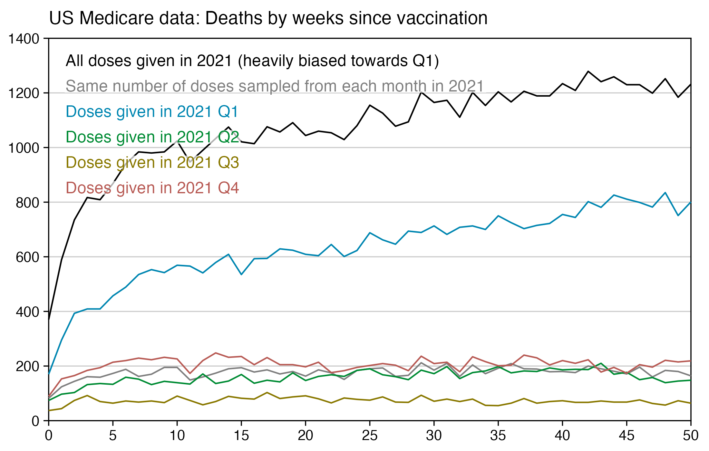
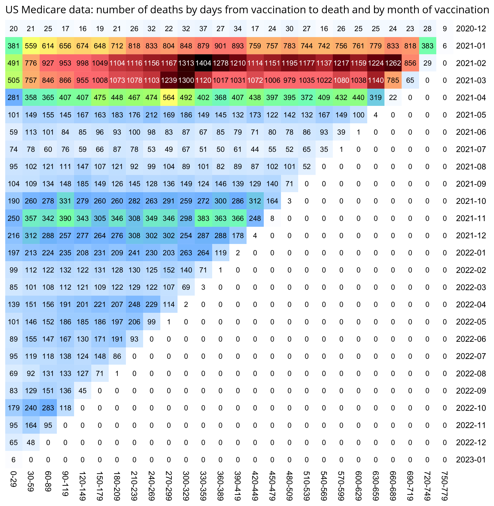

This downloads the New Zealand data and other vaccination data published on Kirsch's S3 server (about 1.3 GB):
brew install rclone printf %s\\n '[kirsch]' type=s3 provider=Other access_key_id=g42m54xwZS80yQpAO20Q secret_access_key=Kq77gLL47mbypnnRc0UP7sPTvrvjn6y0D5FSEK5H endpoint=kirsch.izt.world:443 acl=private>~/.config/rclone/rclone.conf rclone sync kirsch:/data-transparency data-transparency
You can also download the data with Cyberduck: https://cyberduck.io. Click "Open Connection", set the service type to Amazon S3, set the server to kirsch.izt.world, set "Access Key ID" to g42m54xwZS80yQpAO20Q, set "Secret Access Key" to Kq77gLL47mbypnnRc0UP7sPTvrvjn6y0D5FSEK5H, and click "Connect".
There's also direct download links for an old version of the data here: https://getdatatransparency.com, http://www.oretek.com/vsrf/. However many files have been added or changed since the old version was downloaded.
In November 2023, Steve Kirsch published record-level vaccination data from New Zealand which he said he received from a whistleblower who worked for the New Zealand Ministry of Health. [https://kirschsubstack.com/p/data-from-us-medicare-and-the-new] An interview of the whistleblower was published by Liz Gunn, who called the release of the data the "Mother of All Revelations" or "M.O.A.R.", and who referred to the whistleblower using the pseudonym Winston Smith. [https://rumble.com/v3ynskd-operation-m.o.a.r-mother-of-all-revelations.html]
The real name of the whistleblower is Barry Young. At first his LinkedIn profile said that he has worked at Bank of New Zealand from 2010 until the present, and that he only worked at the NZ Ministry of Health from 2008 to 2010, but later he added a new entry to his profile which said that in 2018 he started to work again at the Ministry of Health: [https://www.linkedin.com/in/barry-young-41a65616/, https://nzougwlgotnday2016.sched.com/barry_young]
People were doubting if the whistleblower actually worked for the New Zealand health authorities, but an article about him said that "Te Whatu Ora Health New Zealand is investigating a staff member accused of spreading Covid-19 misinformation using its data." [https://www.rnz.co.nz/news/national/503703/health-nz-staff-member-investigated-for-covid-19-misinformation] "Te Whatu Ora" is the Māori name of Health New Zealand, and the Ministry of Health is called "Manatū Hauora". Wikipedia says: "Te Whatu Ora is responsible for the planning and commissioning of health services as well as the functions of the 20 former district health boards. The Ministry of Health remains responsible for setting health policy, strategy and regulation." [https://en.wikipedia.org/wiki/Te_Whatu_Ora] Barry Young's LinkedIn profile says that he works for the Ministry of Health, so I don't know if it's possible that he simultaneously worked for Te Whatu Ora, but Te Whatu Ora was only launched in 2022 and it assumed some of the previous responsibilities of the Ministry of Health.
In an interview with New Zealand Herald, the chief executive of Te Whatu Ora said that "an injunction had been used to have information taken down from an overseas website and cyber security specialists are continuing to scan extensively for any other places where the information may appear", and that "We sought and were granted an injunction through the Employment Relations Authority that prevents any publication of the data to ensure that we can take all steps to protect the privacy of individuals." [https://www.nzherald.co.nz/nz/te-whatu-ora-granted-urgent-injunction-police-complaint-filed-over-mass-privacy-breach-of-covid-19-vaccination-data-by-former-staff-member/EUKC3NHC6FAOVL2YJSE4GUR6BU/]
Kirsch's Substack post said that "we were only given 4M of the 12M records in New Zealand" and that "The data from New Zealand is not perfect; it is not a complete sample. For example, for some people, the first record in the database is Dose #3."
Someone from New Zealand who spoke to Barry Young wrote the following: [https://www.voicesforfreedom.co.nz/blog/missing-data-explained/]
During New Zealand's Covid-19 vaccination drive, individuals had a choice of the type of location where they could receive an injection.
These choices were funded via different payment models:
- Bulk-funded providers, including drop-in mass vaccination centres and community mobile vaccination vans, working towards targets.
- Smaller pay-per-dose providers, including chemists, GP clinics, etc.
The payment system data exposed by the whistleblower was the latter of these two options.
Some individuals may have had injections in both settings, which would account for records for some doses and not others.
On the website of the New Zealand Ministry of Health, there is a PowerPoint presentation about the pay-per-dose system which says: "Price Per Dose (PPD) is a payment mechanism that automatically processes the vaccination records on a weekly basis in CIR. Through the Price Per Dose mechanism, Providers do not need to issue, send or wait for invoices to be processed in order to be paid." [https://view.officeapps.live.com/op/view.aspx?src=https%3A%2F%2Fwww.pinnaclepractices.co.nz%2Fassets%2FPayments-Provider-Org-Admin-Presentation.pptx&wdOrigin=BROWSELINK]
Kirsch's S3 server has a file called About the New Zealand files.docx which provides a bit more details:
The record level .csv file has 4M rows. All the information is randomized so that the statistics are intact but all the fields of every record have been randomized so it will not match any fields of the original record. If there is a match to someone living, that is simply an unavoidable coincidence.
4,193,438 total database records of people who were vaccinated (dead and alive).
2,215,730 unique people are covered in the database.
37,285 unique people died were reported in the data and summarized in the time-series cohort analysis.
66,005 total records for those who have died (so average of less than 2 vaccination records per dead person)
The data is approximately 33% of all New Zealand vaccination records.
Only people who were vaccinated are included in the data. So you cannot use the unvaccinated as a control group.
There was a disproportionate draw on each dose (i.e., for some doses we got a greater percentage of records than other doses).
This database will not contain all records of every person who has a record, e.g., the first record to appear may be on dose 3.
Unvaccinated people never died because the database only had entries for people who received at least one vaccine.
The database is skewed over time in terms of which reports got into this database. That's why you want to look at the death over time for a given dose and deaths per person year, and do NOT compare absolute death rates in a dose unless you are doing a time series cohort analysis where you are calculating death per person days.
I don't understand how it's possible to randomize all fields while simultaneously keeping the statistics intact like Kirsch wrote, because you would have to sacrifice some fidelity in the statistics even if you only randomized a single field.
When Kirsch did a presentation about the data at MIT, he said: "You get the original data - which we have obfuscated so we don't get into trouble - it's all HIPAA-compliant - but we preserved all of the fidelity of the data so that we have shifted things such that the statistics are identical even though no record matches anything about any of the people given." [https://rumble.com/v3yovx4-vsrf-live-104-exclusive-mit-speech-by-steve-kirsch.html, time 52:00] But how can the statistics be identical to the real data if "no record matches anything about any of the people given"?
During an interview on InfoWars, Kirsch said: "We have the original data. It's been anonymized so we don't run into any privacy issues or HIPAA violations. But it's been anonymized in a way that we maintain the statistical fidelity of the data. In other words we time-shifted all of the dates relative to each other, but the dates relative to each other are the same. We just shifted them slightly in time so that you can still do the statistical analysis without violating anyone's privacy." [https://banned.video/watch?id=656a5c4e0681e68064e50415, time 14:25] In a Substack post in February 2023 where Kirsch requested people to release record-level vaccination data, he provided instructions on how to format the data which matched the format of the CSV file for Barry Young's data, and Kirsch also wrote: "Before publicly releasing the records, you obfuscate them using a method that is deterministic on a per record basis so that all the dates of a given person's records are consistently time shifted." [https://kirschsubstack.com/p/a-worldwide-call-for-data-transparency] So I guess the way the data was obfuscated was that for each person in the dataset, the dates of the person were shifted by a random number of days backwards or forwards.
Kirsch said that each record contained auditing information which confirmed the authenticity of the data: "Anyone who claims the NZ data is fraudulent is trying to gaslight you. I've spent weeks analyzing the data. It's not fraudulent. The NZMH has NEVER said it was fraudulent. You don't get arrested for exposing data that is not real. There is auditing information on each record that confirms the authenticity of the data." [https://x.com/stkirsch/status/1731228907490201848]
Barry Young's dataset includes data for about two and half years, because the earliest death is on 2021-05-09 and the last death is on 2023-10-27, and the earliest vaccination is on 2021-04-18 and the last vaccination is on 2023-09-24.
At first I thought that the value of the age column indicated age on the date of vaccination, but the age is always the same in each entry for a patient, so for example the age of patient 1 is listed as 72 on rows for doses given in both 2021 and 2023:
$ awk 'NR==1||/^1,/' nz-record-level-data-4M-records.csv|csvtk pretty|sed 2d mrn batch_id dose_number date_time_of_service date_of_death vaccine_name date_of_birth age 1 1 2 07-24-2021 Pfizer BioNTech COVID-19 05-23-1951 72 1 1 1 06-19-2021 Pfizer BioNTech COVID-19 05-23-1951 72 1 104 5 05-07-2023 Pfizer Comirnaty Original/Omicron BA.4-5 15/15 mcg 05-23-1951 72
So the column for the age probably corresponds to the age of the patient on a certain date. In order to reverse engineer which date it was, for each day in the years 2020 to 2025, I checked how many patients had an age which matched the date of birth. I got the highest number of matches for December 2nd 2023, the last date with non-zero matches was December 13th 2024, and the number of matches went linearly down to almost zero around November 30th 2022 when there's an inflection point, but after that it takes over a year until the number of matching dates goes to completely zero in May 2021. So basically the age column seems to correspond to the age around December 2st 2023, and the dates of birth seem to have been shifted by at most around 11 days backwards or forwards:

In an X Space where Kirsch was asked to describe the obfuscation procedure, he said: "The transformation is very unlikely to have shifted someone's data by over 30 days. It's very unlikely to have shifted someone's data by over 10 days." [https://twitter.com/stkirsch/status/1733531453978489209, time 19:31] So maybe the number of days is selected using a random variable with a normal distribution, so the maximum number of days can be even higher than 11.
Later Kirsch added a file which explained the obfuscation algorithm to his S3 server:
$ cat data-transparency/Code/time-series\ analysis/obfuscation_algorithm.txt
"For each person, a non-zero date offset was chosen from a gaussian distribution with sigma=7
and all of the dates for that record were offset for that same amount,
so the differences between dates are identical."
date_delta = 0
while date_delta == 0:
date_delta = int(random.normalvariate(0,1) * 7)
This means that every record was altered. No record was left intact.
Every date was time shifted by the same amount.
Note:
The "Age" field was inserted as a convenience item for use in Excel.
Anyone doing serious work on the data should always use the date of birth to compute the exact age at the time of the record.
Kirsch's description says that a random number was chosen "for each person", but it's not clear if different randoms number may have been used in different lines for the same person. However as evidence that all the lines of a person were shifted by the same amount of days, a website about COVID vaccinations in New Zealand said about the Pfizer vaccine that "You need 2 doses. The standard gap between doses is 3 weeks or more." [https://covid19.govt.nz/covid-19-vaccines/covid-19-vaccine-facts-and-advice/covid-19-vaccines-used-in-new-zealand/] And in Kirsch's CSV file the most common gap between the first and second doses is 21 days:
> t=as.data.frame(data.table::fread("nz-record-level-data-4M-records.csv"))
> for(i in grep("date",colnames(t)))t[,i]=as.Date(t[,i],"%m-%d-%Y")
> me=t[t$dose_number==1,c(1,4)]|>merge(t[t$dose_number==2,c(1,4)],by=1)
> head(sort(table(me[,3]-me[,2]),T),30)
21 42 28 22 43 35 23 49 56 44 27
144609 121862 47806 35671 26362 24864 18890 17422 17251 17244 16413
24 41 25 45 26 29 46 36 34 40 39
15785 15744 14393 14328 13802 13661 12171 11858 11384 11250 10947
48 47 30 38 37 31 32 33
10782 10624 10494 10359 10178 9610 9323 9300
WelcomeTheEagle made this image which appears to show that Young's dataset includes almost all of the New Zealand population aged 85 and above: [https://welcometheeagle.substack.com/p/p6-new-zealand-data-why-is-youth]

However WelcomeTheEagle got the age of each person from the value of the age column, which is the age on approximately December 2nd or 1st 2023, which can be up to three years higher than the age of people at the beginning of the dataset in 2021.
The average vaccination date included in the dataset is on 2022-03-14, so when I calculated the age of each person on that date instead, I only got about 73% people included in the age group 90-94:

But when I calculated the age on 2023-12-02, I got over 100% people included in the age groups 90-94 and 95+:

An even more accurate way to calculate the age composition would be to calculate the total person-years within each age group, and then divide it by the ratio between total person-years and total people (which is about 1.7):

pop=tail(read.csv("https://mongol-fi.github.io/f/nz_infoshare_population.csv"),2)[,-1]|>colMeans()
m=data.frame('New Zealand population (2021-2022 average)'=tapply(pop,0:95%/%5*5,sum),check.names=F)
rownames(m)=paste0(seq(0,94,5),"-",seq(4,94,5))|>c("95+")
t=as.data.frame(data.table::fread("nz-record-level-data-4M-records.csv"))
for(i in grep("date",colnames(t)))t[,i]=as.Date(t[,i],"%m-%d-%Y")
meandate=mean(t$date_time_of_service)
meandate=as.Date("2023-12-2")
birth=t$date_of_birth[!duplicated(t$mrn)]
yeardiff=\(x,y)as.numeric(substring(x,1,4))-as.numeric(substring(y,1,4))-as.integer(substring(x,6,12)<substring(y,6,12))
age=table(pmax(0,pmin(yeardiff(meandate,birth),95)%/%5*5))
t=t[order(t$date_time_of_service),]
t=t[!duplicated(t$mrn),]
meandays=mean(as.numeric(pmin(t$date_of_death,max(t$date_of_death,na.rm=T),na.rm=T)-t$date_time_of_service))
buck=read.table("data-transparency/New Zealand/time-series summaries/month_dose_week_single_age.txt",header=T)
buck=buck[buck$dose!=0,]
age=tapply(buck$alive,pmin(95,buck$age)%/%5*5,sum)/meandays
m[[paste0("People in leaked dataset (based on person-days)")]]=age
m$"Percent included in leaked dataset"=m[,2]/m[,1]*100
disp=apply(m,2,\(x)ifelse(x>1e3,paste0(round(x/1e3),"k"),round(x)))
sum=colSums(m)
disp=rbind(paste0(round(sum[1:2]/1e6,1),"M")|>c(round(sum[2]/sum[1]*100)),disp)
m=rbind(Total=0,apply(m,2,\(x)x/max(x)))
pheatmap::pheatmap(
t(m),
filename="1.png",
cluster_rows=F,
cluster_cols=F,
legend=F,
cellwidth=20,
cellheight=20,
fontsize=9,
border_color=NA,
display_numbers=t(disp),
fontsize_number=8,
number_color="black",
breaks=seq(0,1,,256),
colorRampPalette(colorspace::hex(colorspace::HSV(c(210,210,130,60,40,20,0),c(0,.5,.5,.5,.5,.5,.5),1)))(256)
)
In the old age groups which account for most deaths, there's a decreasing trend in crude mortality rate in New Zealand:

There are several anomalies in the CSV file published by Kirsch, but they may have been caused by the procedure that was used to obfuscate the data, or they may have been caused by errors in manual data entry.
There are 47 combinations of patient ID and dose number which are listed twice in the CSV file. For example patient 152535 got the first dose twice the same day, with one entry for AstraZeneca and another entry for Pfizer:
$ cut -d, -f1,3 nz-record-level-data-4M-records.csv|awk '{++a[$0]}END{for(i in a)++b[a[i]];for(i in b)print b[i],i}'
4193345 1
47 2
$ cut -d, -f1,3 nz-record-level-data-4M-records.csv|awk 'a[$0]++'|sed 1q # ID of first patient which received the same dose number twice
152535,1
$ awk -F, 'NR==1||$1==152535' nz-record-level-data-4M-records.csv
mrn,batch_id,dose_number,date_time_of_service,date_of_death,vaccine_name,date_of_birth,age
152535,35,1,12-07-2021,,AstraZeneca,08-02-1976,47
152535,36,1,12-07-2021,,Pfizer BioNTech COVID-19,08-02-1976,47
152535,51,2,01-28-2022,,Pfizer BioNTech COVID-19,08-02-1976,47
There are 4 patients whose date of vaccination is later than the date of death:
> t=read.csv("nz-record-level-data-4M-records.csv")
> t2=t[t$date_of_death!="",]
> t2[as.Date(t2$date_time_of_service,"%m-%d-%Y")>as.Date(t2$date_of_death,"%m-%d-%Y"),]|>print.data.frame(row.names=F)
mrn batch_id dose_number date_time_of_service date_of_death
48496 101 5 04-10-2023 03-19-2023
232769 104 5 05-16-2023 05-14-2023
1300857 63 4 07-14-2022 03-30-2022
1764231 60 4 06-28-2022 06-25-2022
vaccine_name date_of_birth age
Pfizer Comirnaty Original/Omicron BA.4-5 15/15 mcg 10-15-1937 85
Pfizer Comirnaty Original/Omicron BA.4-5 15/15 mcg 01-07-1954 69
Pfizer BioNTech COVID-19 12-28-1955 66
Pfizer BioNTech COVID-19 05-08-1931 91
There are also patients who received the first dose later than the second dose:
$ awk 'NR==1||/^928462,/' nz-record-level-data-4M-records.csv mrn,batch_id,dose_number,date_time_of_service,date_of_death,vaccine_name,date_of_birth,age 928462,22,1,10-11-2021,,Pfizer BioNTech COVID-19,09-11-1972,51 928462,22,2,08-31-2021,,Pfizer BioNTech COVID-19,09-11-1972,51 928462,49,3,02-03-2022,,Pfizer BioNTech COVID-19,09-11-1972,51
The maximum number of vaccination entries per patient ID is 8. There are a couple of lines where the dose number is much higher than 8, but some of them might errors in data entry, because there is even one patient whose highest dose number is 32:
$ awk -F, 'NR>1{a[$1]++}END{for(i in a)b[a[i]]++;for(i in b)print i,b[i]}' nz-record-level-data-4M-records.csv|sort -n # number of patients ID with each number of entries
1 910958
2 784859
3 401014
4 85288
5 33099
6 505
7 5
8 1
$ awk -F, 'NR>1{a[$3]++}END{for(i in a)print i,a[i]}' nz-record-level-data-4M-records.csv|sort -n # count of entries for each dose number
1 966994
2 1034807
3 1053284
4 762241
5 369371
6 6633
7 76
8 20
9 1
10 1
11 1
12 3
16 1
20 1
24 1
28 1
29 1
32 1
There are 581 people who have different birthdays on different lines, but it might be an artifact of the obfuscation procedure where the dates of birth and vaccination were shifted by a random number of days (even though from Kirsch's description of the procedure, it seemed that all dates of the same person were always shifted by the same amount of days):
$ cut -d, -f1,7 nz-record-level-data-4M-records.csv|awk '!a[$0]++'|awk -F, '++a[$1]==2'|wc -l 581 $ awk 'NR==1||/^292629,/' nz-record-level-data-4M-records.csv mrn,batch_id,dose_number,date_time_of_service,date_of_death,vaccine_name,date_of_birth,age 292629,13,1,09-04-2021,,Pfizer BioNTech COVID-19,08-30-1975,48 292629,16,2,09-25-2021,,Pfizer BioNTech COVID-19,09-29-1975,48
A note in the file Medicare-2-1-23.xlsx on Kirsch's S3 server also said that "A small portion of the Medicare records have people who got vaccinated AFTER they died. These records have been deleted." So errors like this also seem to exist in other datasets.
Barry Young's presentation included the table below which shows the ten batches with the highest percentage of deaths per dose: [https://rumble.com/v3yqgsf-liz-gunn-the-mother-of-all-covid-19-vaccine-revelations-data-revealed-in-th.html, time 47:00]

I noticed that the numbers in Young's table don't match the CSV file published by Kirsch, because for example batch 1 has a total of 711 doses in the table above but 4,386 doses in the CSV file. In the table above there's 5 different batches which have over 10% deaths, but in the CSV file there's only one batch with over 10% deaths:
$ awk -F, 'NR>1{n[$2]++;n2[$2][$1]}$5{d[$2]++;d2[$2][$1]}END{for(i in d)print i FS n[i]FS d[i]FS 100*d[i]/n[i]FS length(n2[i])FS length(d2[i])FS 100*length(d2[i])/length(n2[i])}' nz-record-level-data-4M-records.csv|sort -t, -rnk4|(echo batch,doses_given,doses_leading_to_deaths,doses_leading_to_deaths_pct,persons,deaths,deaths_per_person_pct;head)|column -ts,
batch doses doses_leading_to_death doses_leading_to_death_pct persons deaths deaths_per_person_pct
1 4386 674 15.3671 2979 375 12.5881
3 6213 317 5.10221 4875 264 5.41538
8 3986 203 5.09282 3774 193 5.11394
2 16627 754 4.53479 13518 596 4.40894
7 1288 56 4.34783 1232 51 4.13961
72 10624 356 3.3509 10622 356 3.35153
4 7111 237 3.33286 7015 233 3.32145
71 20325 620 3.05043 20276 619 3.05287
35 103143 3141 3.04529 102759 3129 3.04499
32 42178 1281 3.03713 41866 1277 3.05021
Some people received two doses from the same batch, so they are counted twice in columns 2-4 above but only once in columns 5-7, so for example there are 375 people who died after receiving batch 1, but many of them received two doses from batch 1 so there are 674 doses in batch 1 which led to a death. There are also a few patients who received 3 or 4 doses from the same batch but no patients who received 5 or more doses from the same batch.
Uncle John Returns figured out that people who later went on to have a subsequent dose were excluded from Young's table. [https://x.com/UncleJo46902375/status/1731625480527257928] You can almost reproduce the table if you sort the records by vaccination date and select only the newest record for each person (but for some reason there are small discrepancies in the number of deaths for some batches):
> t=read.csv("nz-record-level-data-4M-records.csv")
> t2=t
> for(i in grep("date",colnames(t2)))t2[,i]=as.Date(t2[,i],"%m-%d-%Y")
> t2=t2[rev(order(t2$date_time_of_service)),]
> t2=t2[!duplicated(t2$mrn),]
> d=as.data.frame(table(batch=t2$batch_id))
> colnames(d)[2]="doses"
> d$deaths=table(factor(t2$batch_id[!is.na(t2$date_of_death)],d$batch))
> d$pct=100*d$deaths/d$doses
> d=d[order(-d$pct),]
> head(d,10)|>print.data.frame(row.names=F)
batch doses deaths pct
1 711 152 21.378340
8 221 38 17.194570
3 310 48 15.483871
4 364 37 10.164835
6 1006 102 10.139165
2 1018 99 9.724951
7 38 3 7.894737
72 5882 280 4.760286
62 18173 834 4.589226
71 11019 504 4.573918
However Young's method exaggerates the percentage of deaths in the early batches, because a common reason why some person would only get a vaccine from batch 1 but not subsequent batches was that the person died before they could get more vaccine doses. And in Young's table, the seven batches with the highest percentage of deaths were all early batches with an ID below 10. It would probably be more accurate to use a "bucket" system where you would calculate deaths per person-years, and where you would include people who later got a dose from another batch under the person-years of the earlier batch until they got the next batch.
In his presentation Barry Young pointed out that in the 2010s, New Zealand had only a handful of days which had more than 120 deaths, such as during the Christchurch earthquake in 2011, but in 2021 and 2022 after COVID vaccines had been rolled out, there was a much higher number of days which had more than 120 deaths:

However according to the Short-Term Mortality Fluctuations dataset, the average number of deaths per day in New Zealand increased from about 83 in 2011 to about 94 in 2019:
> t=read.csv("https://www.mortality.org/File/GetDocument/Public/STMF/Outputs/NZL_NPstmfout.csv")
> t2=t[t$Sex=="b"&t$Year>=2011,]
> round(tapply(t2$Total,t2$Year,mean)/7,1)
2011 2012 2013 2014 2015 2016 2017 2018 2019 2020 2021 2022 2023
82.9 82.3 80.7 85.0 86.8 85.6 92.0 90.8 93.6 89.5 95.6 105.7 103.3
So therefore it would make more sense to use the linear trend in deaths before COVID as the baseline, and to then count how many days have a number of deaths that's more than a given threshold above the baseline. [https://x.com/UncleJo46902375/status/1730241561424732620] Below I calculated a linear trend for the data from 2011-2019, and I counted how many weeks each year had where the number of deaths was 2 or more standard deviations above the trend, where I got the standard deviation from the weekly difference to the trend in 2011-2019. But the number of weeks above the threshold was only 1 in 2021, because there were almost no COVID deaths in 2021:
> isoweek=\(year,week,weekday=1){d=as.Date(paste0(year,"-1-4"));d-(as.integer(format(d,"%w"))+6)%%7-1+7*(week-1)+weekday}
> xy=data.frame(x=isoweek(t2$Year,t2$Week,4),y=t2$Total)
> past=xy$x<as.Date("2020-1-1")
> model=predict(lm(y~x,xy[past,]),xy)
> diff=xy$y-model
> dates=xy$x[diff/sd(diff[past])>=2]
> dates
[1] "2011-02-24" "2011-08-18" "2011-09-08" "2012-07-12" "2012-07-19" "2015-07-30" "2015-08-06"
[8] "2015-08-13" "2017-07-20" "2017-07-27" "2017-08-03" "2017-08-10" "2019-07-11" "2021-08-12"
[15] "2022-05-12" "2022-05-26" "2022-06-16" "2022-06-23" "2022-06-30" "2022-07-07" "2022-07-14"
[22] "2022-07-21" "2022-07-28" "2022-08-04" "2022-08-18" "2023-08-24"
> table(factor(as.numeric(substr(dates,1,4)),2011:2023))
2011 2012 2013 2014 2015 2016 2017 2018 2019 2020 2021 2022 2023
3 2 0 0 3 0 4 0 1 0 1 11 1
Barry Young's presentation included this table which showed the vaccination sites with the highest percentage of deaths per dose: [https://rumble.com/v3ynskd-operation-m.o.a.r-mother-of-all-revelations.html]

The vaccination site on the first row of the table is called "Te Hopai Home & Hospital", which has 191 vaccinations and 61 deaths which results in ratio of about 32% deaths per vaccination. I don't know if the number of vaccinations refers to the number of vaccine doses given or the number of vaccinated persons, or I don't know if Young excluded people who later went on to get subsequent vaccine doses from his table.
But in any case, The Hopai Home & Hospital is a nursing home. [https://www.tehopai.co.nz/] The dataset published by the whistleblower includes about two and half years of data, so over that period of time, it's not that unusual that about 30% of vaccine doses in a nursing home would've been given to people who are now dead. Even though actually someone posted a Substack comment which said: "Te Hopai was a vaccination centre for the public, not just aged care residents. Teenagers got jabs there so you are being very misleading here." [https://www.igor-chudov.com/p/i-analyzed-the-leaked-nz-whistleblower/comment/44717804]
It might make more sense to calculate an age-standardized mortality rate per vaccination site, but the files published by Kirsch don't include data about the vaccination sites. Different sites are also going to have different average dates of vaccination, and people who were vaccinated in 2021 have had more time to die since vaccination than people who were vaccinated in 2023.
In the CSV file that was published by Kirsch, there are only 7 records where the date of death is the same as the date of vaccination, so that the time from vaccination to death was zero days. And there's also a low number of records where the date of death is within a week from a vaccination, which might be explained by the healthy vaccinee effect if people who are at immediate risk of death don't get vaccinated:
> t=read.csv("nz-record-level-data-4M-records.csv")
> t2=t[t$date_of_death!="",]
> ta=table(as.Date(t2$date_of_death,"%m-%d-%Y")-as.Date(t2$date_time_of_service,"%m-%d-%Y"))
> head(ta,100)
-106 -22 -3 -2 0 1 2 3 4 5 6 7 8 9 10 11 12 13 14 15
1 1 1 1 7 46 40 55 74 59 79 70 78 74 80 89 98 82 91 86
16 17 18 19 20 21 22 23 24 25 26 27 28 29 30 31 32 33 34 35
100 83 89 96 98 106 122 92 96 99 98 115 83 105 109 92 123 104 118 102
36 37 38 39 40 41 42 43 44 45 46 47 48 49 50 51 52 53 54 55
116 89 108 122 103 107 110 110 125 109 114 99 111 117 119 110 109 115 113 126
56 57 58 59 60 61 62 63 64 65 66 67 68 69 70 71 72 73 74 75
126 122 113 119 118 114 115 102 140 138 137 116 140 112 131 118 110 135 113 124
76 77 78 79 80 81 82 83 84 85 86 87 88 89 90 91 92 93 94 95
122 122 124 116 133 127 114 110 132 142 109 130 134 127 124 127 142 133 134 138
There's 4 records where the date of death is earlier than the date of vaccination, but they may be the result of errors in data entry. The most common durations from vaccination to death are 100 and 170 days which are on shared first place:

It seems unusual that there were only 7 deaths which occurred on the same day as a vaccination. In 2021 to 2023, the average number of deaths per day in New Zealand was about 101, and even if Young's dataset would only include about a third of all vaccination records, a third of 101 would would still be about 34. Even though I guess if people got vaccinated during the working day, then the average time of day when people got vaccinated might be after midday, and if someone died at 4 AM then they probably weren't vaccinated the same day. And the dataset is also missing deaths among unvaccinated people.
The earliest date of vaccination in the dataset is on April 18th 2021, and the number of missing vaccination doses is disproportionately high in the first half of 2021. The last date of death is on October 27th 2023. So in the histogram above, the number of deaths tapers off at the end of the x-axis and there is only a small number of deaths that occurred more than 800 days after a vaccination, but that's because the dataset only includes a small number of people who were vaccinated early enough that it was possible for them to die more than 800 days from the vaccination.
R code:
library(ggplot2)
t=read.csv("nz-record-level-data-4M-records.csv")
t2=t[t$date_of_death!="",]
ta=table(as.Date(t2$date_of_death,"%m-%d-%Y")-as.Date(t2$date_time_of_service,"%m-%d-%Y"))
xy=data.frame(x=as.numeric(names(ta)),y=as.numeric(ta))
candidates=c(sapply(c(1,2,5),\(x)x*10^c(-10:10)))
xstep=candidates[which.min(abs(candidates-max(xy$x)/11))]
ystep=candidates[which.min(abs(candidates-max(xy$y)/6))]
xstart=xstep*floor(min(xy$x)/xstep)
xend=xstep*ceiling(max(xy$x)/xstep)
ystart=ystep*floor(min(xy$y)/ystep)
yend=ystep*ceiling(max(xy$y)/ystep)
xbreak=seq(xstart,xend,xstep)
ybreak=seq(ystart,yend,ystep)
ggplot(xy,aes(x,y))+
geom_hline(yintercept=ystart,color="black",linewidth=.2,lineend="square")+
geom_vline(xintercept=xstart,color="black",linewidth=.2,lineend="square")+
geom_point(size=.2)+
scale_x_continuous(limits=c(xstart,xend),breaks=xbreak,expand=c(0,0))+
scale_y_continuous(limits=c(ystart,yend),breaks=ybreak,expand=c(0,0))+
coord_cartesian(clip="off")+
labs(x="Difference in days between date of death and date of vaccination",y="Number of deaths",title="Number of deaths for each difference between date of death and date of vaccination in MOAR dataset")+
theme(
axis.text=element_text(size=6,color="black"),
axis.ticks=element_line(linewidth=.2,color="black"),
axis.ticks.length=unit(.15,"lines"),
axis.title=element_text(size=7),
legend.position="none",
panel.background=element_rect(fill="white"),
panel.grid=element_blank(),
plot.background=element_rect(fill="white"),
plot.margin=margin(.4,.5,.4,.5,"lines"),
plot.subtitle=element_text(size=6),
plot.title=element_text(size=6.8)
)
ggsave("1.png",width=6,height=3)
The number of deaths peaks at about 100 days after vaccination when all doses are aggregated together, but the number of deaths peaks at about 300 days for the first two doses, and the first two doses are underrepresented in the dataset. The number of deaths peaks at about 100 days for the fifth dose, after which it falls to zero at around 200 days, because there were almost no fifth doses given before March 2023 which is about 200 days before the end of the data, but if the data extended further into the future, then the peak in deaths after the fifth dose might occur later. The fifth dose overrepresented in Young's dataset relative to earlier doses, because the proportion of missing doses is lower for newer doses and higher for earlier doses, but if there would be no missing doses in the dataset, then the peak in deaths for all doses aggregated together might occur more than 100 days after vaccination:

In fact if you simply omit all vaccine doses given in 2023, then almost all fifth doses are omitted, so the peak in deaths for all doses aggregated together is about 300 days after vaccination:

In the plots above I included all doses a person received, but if I would've only included the last dose before death, then the average time from vaccination until death would've been lower.
In the plot below I included vaccinations which were given at least 51 weeks before the last death in the dataset, and I only included deaths that happened within 51 weeks from vaccination, so now the number of deaths no longer tapers off at the end of the x-axis:

In the plot above there's a period around weeks 15-30 where dose 3 is fairly far above the trend line, which may have been caused by the wave of COVID deaths in 2022, because most third doses were given around November 2021 to March 2022. But afterwards the line for dose 3 goes below the trend line, which might be because of a pull forward effect or because there was a period of low overall mortality in late 2022.
I'm not sure why there the plot above has an increasing trend in deaths over time, but there's a couple of reasons I can think:
The plot below is otherwise the same as my previous plot but I only included the most recent dose listed for each person. Now dose 1 includes atypical people who didn't get a subsequent dose after the first dose, which is commonly because the people died before they could get further shots, so dose 1 has a large number of deaths for the first few weeks after vaccination:

R code:
library(ggplot2)
t=as.data.frame(data.table::fread("nz-record-level-data-4M-records.csv")) # this is faster than `read.csv`
for(i in grep("date",colnames(t)))t[,i]=as.Date(t[,i],"%m-%d-%Y")
weeks=51
date1=max(t$date_of_death,na.rm=T)
date2=date1-weeks*7+1
t=t[t$date_time_of_service<=date2,]
t=t[t$date_time_of_service<=t$date_of_death,]
t=t[t$dose_number<=4,]
doses=table(t$dose_number)
t=t[t$date_of_death-t$date_time_of_service<weeks*7,]
# t=t[rev(order(t$date_time_of_service)),]
# t=t[!duplicated(t$mrn),]
t=t[!is.na(t$date_of_death),]
ta=as.data.frame(table(floor((t$date_of_death-t$date_time_of_service)/7),t$dose_number))
xy=data.frame(x=as.numeric(levels(ta$Var1)),y=c(ta$Freq/doses[ta$Var2]),z=paste0("Dose ",ta$Var2))
tap=tapply(ta$Freq,ta$Var1,sum)
xy=rbind(data.frame(x=as.numeric(names(tap)),y=tap/sum(doses),z="Total"),xy)
xy$y=1e3*xy$y
xy$z=factor(xy$z,unique(xy$z))
xy$a=split(xy,xy$z)|>lapply(\(i)lm(y~x,i)|>predict(i))|>unlist()
xstart=0
xend=weeks-1
xstep=5
candidates=c(sapply(c(1,2,5),\(x)x*10^c(-10:10)))
ystep=candidates[which.min(abs(candidates-max(xy$y)/6))]
ystart=0
yend=ystep*ceiling(max(xy$y)/ystep)
xbreak=seq(xstart,xend,xstep)
ybreak=seq(ystart,yend,ystep)
labels=data.frame(x=xstart+.03*(xend-xstart),y=seq(.97*yend,,-yend/15,nlevels(xy$z)),label=levels(xy$z))
color=c("black",hcl(c(210,120,60,0,300)+15,70,50))
ggplot(xy,aes(x,y))+
geom_hline(yintercept=ystart,color="black",linewidth=.3,lineend="square")+
geom_vline(xintercept=xstart,color="black",linewidth=.3,lineend="square")+
geom_line(aes(color=z),size=.4)+
geom_line(aes(y=a,color=z),linetype=2,size=.4)+
geom_label(data=labels,aes(x=x,y=y,label=label),fill=alpha("white",.7),label.r=unit(0,"lines"),label.padding=unit(.04,"lines"),label.size=0,color=color[1:nlevels(xy$z)],size=3.4,hjust=0,vjust=1)+
labs(x="Weeks from vaccination to death",y="Deaths per thousand doses",title=paste0("Deaths per thousand doses by weeks since vaccination, last time of death ",date1,", last time of vaccination ",date2," (",weeks,"*7-1 days earlier). Week 0 extends from day of vaccination to 6 days later. For people with multiple doses, all doses are included and not only the most recent dose.")|>stringr::str_wrap(70))+
coord_cartesian(clip="off")+
scale_x_continuous(limits=c(xstart,xend),breaks=xbreak,expand=c(0,0))+
scale_y_continuous(limits=c(ystart,yend),breaks=ybreak,expand=c(0,0))+
scale_color_manual(values=color)+
theme(
axis.text=element_text(size=8,color="black"),
axis.ticks=element_line(linewidth=.3,color="black"),
axis.ticks.length=unit(.2,"lines"),
axis.title=element_text(size=9),
legend.position="none",
panel.background=element_rect(fill="white"),
panel.grid=element_blank(),
plot.background=element_rect(fill="white"),
plot.margin=margin(.4,.5,.4,.5,"lines"),
plot.subtitle=element_text(size=9),
plot.title=element_text(size=10)
)
ggsave("1.png",width=5,height=3.5)
system("mogrify -trim -border 24 -bordercolor white 1.png")
Next I tried calculating a crude mortality rate for each dose so that I divided the number of deaths each week with the number of people who had received a dose that week. Now there was an increase in crude mortality rate of each dose after the sample size becomes small, which I though was probably because then a large part of the population consists of old or vulnerable people who received the dose the earliest. However when I also included the average age of dead persons in the plot, at the point when the cohort size went close to zero and mortality rate shot up, for some reason the age at death decreased for the 4th and 5th doses even though it increased for the first three does:

R code:
library(ggplot2)
t=as.data.frame(data.table::fread("nz-record-level-data-4M-records.csv")) # this is faster than `read.csv`
for(i in grep("date",colnames(t)))t[,i]=as.Date(t[,i],"%m-%d-%Y")
# t=t[rev(order(t$date_time_of_service)),]
# t=t[!duplicated(t$mrn),]
maxdose=5
maxdate=max(t$date_of_death,na.rm=T)
pop=table(floor((pmin(t$date_of_death,maxdate,na.rm=T)-t$date_time_of_service)/7),t$dose_number)|>apply(2,\(x)rev(cumsum(rev(x))))
doses=table(t$dose_number)
dead=t[!is.na(t$date_of_death),]
age=aggregate(as.numeric((dead$date_time_of_service-dead$date_of_birth)/365.2422),list(as.numeric(floor((dead$date_of_death-dead$date_time_of_service)/7)),dead$dose_number),mean)
death=floor((dead$date_of_death-dead$date_time_of_service)/7)|>table(dead$dose_number)|>as.data.frame()|>sapply(as.numeric)
death=merge(death,age,by=c(1,2),all=T)
death=death[death$Var2<=maxdose,]
pops=pop[cbind(as.character(death$Var1),as.character(death$Var2))]
xy=data.frame(x=death$Var1,y=death$Freq/pops,z=paste0("Dose ",death$Var2),pop=pops,age=death[,4])
ages=split(xy,xy$x)|>sapply(\(x)weighted.mean(x$age,x$pop,na.rm=T))
tap=tapply(death$Freq,factor(death$Var1,rownames(pop)),sum,na.rm=T)
xy=rbind(data.frame(x=as.numeric(names(tap)),y=tap/rowSums(pop),z="All doses",pop=rowSums(pop),age=ages[names(tap)]),xy)
xy$y=xy$y*365.2422/7*1e3
xy$z=factor(xy$z,sort(unique(xy$z)))
xy$y[xy$pop<1e3]=NA
xy=na.omit(xy)
xy$trend=split(xy,xy$z)|>lapply(\(i)predict(lm(y~x,i),i))|>unlist()
xy$pop[xy$z=="All doses"]=NA
xstart=0;xend=130;xstep=10
candidates=c(sapply(c(1,2,5),\(x)x*10^c(-10:10)))
ystep=candidates[which.min(abs(candidates-max(xy$y)/6))]
ystart=0
yend=ystep*ceiling(max(xy$y)/ystep)
yend=90
xbreak=seq(xstart,xend,xstep)
ybreak=seq(ystart,yend,ystep)
ystep2=candidates[which.min(abs(candidates-max(xy$pop,na.rm=T)/6))]
yend2=ceiling(max(xy$pop,na.rm=T)/ystep2)*ystep2
secmult=yend/yend2
xy=xy[sample(nrow(xy)),]
color=c("black",hcl(c(210,120,60,0,310,260)+15,70,50))
labels=data.frame(x=as.Date(xstart+.975*(xend-xstart),"1970-1-1"),y=seq(.97*yend,,-yend/15,nlevels(xy$z)),label=levels(xy$z))
kimi=\(x)ifelse(abs(x)>=1e6,paste0(x/1e6,"M"),ifelse(abs(x)>=1e3,paste0(x/1e3,"k"),x))
ggplot(xy,aes(x,y))+
geom_hline(yintercept=c(ystart),color="black",linewidth=.3,lineend="square")+
geom_vline(xintercept=c(xstart,xend),color="black",linewidth=.3,lineend="square")+
geom_line(aes(color=z),linewidth=.4)+
geom_point(aes(y=age,color=z),size=.4)+
geom_line(aes(y=pop*secmult,color=z),linewidth=.4,linetype=2)+
# geom_line(aes(y=trend,color=z),linetype=2,size=.4)+
geom_label(data=labels,aes(x=x,y=y,label=label),fill=alpha("white",.7),label.r=unit(0,"lines"),label.padding=unit(.04,"lines"),label.size=0,color=color[1:nlevels(xy$z)],size=3.2,hjust=1,vjust=1)+
labs(x="Weeks from vaccination to death",y="Deaths per 1,000 person-years (solid)\nAverage age at death (dots)",title="Leaked NZ data: crude mortality rate by weeks from vaccination to death",subtitle="For people with multiple doses, all doses are included and not only the last dose before death, so that a person who gets a subsequent dose also remains classified under previous doses. Weeks with cohort size below 1,000 are omitted. Week 0 extends from day of vaccination until 6 days later."|>stringr::str_wrap(84))+
coord_cartesian(clip="off")+
scale_x_continuous(limits=c(xstart,xend),breaks=xbreak,expand=c(0,0))+
scale_y_continuous(limits=c(ystart,yend),breaks=ybreak,expand=c(0,0),sec.axis=sec_axis(trans=~./secmult,breaks=seq(0,yend2,ystep2),name="Cohort size (dashed)",labels=kimi))+
scale_color_manual(values=color)+
theme(
axis.text=element_text(size=8,color="black"),
axis.ticks=element_line(linewidth=.3,color="black"),
axis.ticks.length=unit(.2,"lines"),
axis.title=element_text(size=9),
axis.title.y.right=element_text(margin=margin(0,0,0,5)),
legend.position="none",
panel.background=element_rect(fill="white"),
panel.grid=element_blank(),
plot.margin=margin(.3,.3,.3,.3,"lines"),
plot.subtitle=element_text(size=8.5,margin=margin(0,0,.4,0,"lines")),
plot.title=element_text(size=10.2,margin=margin(.2,0,.5,0,"lines"))
)
ggsave("1.png",width=5.3,height=3.5,dpi=400)
One of the files generated by the buckets.py script shows mortality by month, dose number, and weeks since vaccination:
$ wget -q https://getdatatransparency.com/data-transparency.zip $ unzip data-transparency.zip [...] $ sed 3q data-transparency/New\ Zealand/time-series\ summaries/month_dose_week_single_age.txt|column -t month dose week age alive dead 2021-01 0 0 1 248 0 2021-01 0 0 2 248 0
I used the file to generate a plot for CMR by dose so that once a person has received a second dose, they are no longer included under the first dose. My plot shows that after around week 22 when the crude mortality rate of all doses begins to decrease, the average age of all doses also decreases. Kirsch said that the peak in mortality around weeks 20-25 was a sign of deaths caused by vaccines, but actually he should've calculated ASMR instead of CMR, or he should've stratified the CMR by age. From the plot below you can see that the cohort size of the first dose drops rapidly during the first 10 weeks, because people are likely to have gotten the second dose within 2 months of the first dose:

The plot above shows that the total CMR of all doses aggregated together increases for around the first 20 weeks. It might partially be because the average age of aggregated doses increases from week 0 to week 10 even though the average age of individual doses remains flat or decreases, which seems paradoxical, but the proportion of first doses out of all doses decreases from week 0 to 10, and first doses have a lower average age than later doses.
The peak in CMR around 20 weeks is missing from age-stratified plots:

R code:
library(ggplot2)
t=read.table("data-transparency/New Zealand/time-series summaries/month_dose_week_single_age.txt",header=T)
t=t[t$dose!=0,]
ag=aggregate(t[,5:6],t[,2:4],sum)
ag=ag[ag$dose<=5&ag$dose>0,]
ag=merge(ag,aggregate(ag$alive,ag[,1:2],sum),by=1:2)
colnames(ag)[6]="allagepop"
xy=aggregate(ag[,4:5],ag[,1:2],sum)
xy=merge(xy,aggregate(ag$age*ag$alive/ag$allagepop,ag[,c(1:2)],sum),by=1:2)
colnames(xy)[5]="age"
xy$dose=paste0("Dose ",xy$dose)
total=aggregate(ag[,4:5],ag[,"week",drop=F],sum)
total$dose="All doses"
total$age=tapply(ag$age*ag$alive,ag$week,sum)/tapply(ag$alive,ag$week,sum)
xy=rbind(total[,colnames(xy)],xy)
xy$alive=xy$alive/365
xy$cmr=xy$dead/xy$alive*1e5
xy$dose=factor(xy$dose,unique(xy$dose))
minpop=1e3
xy$cmr[xy$alive<minpop]=NA
xy=na.omit(xy)
# xy$trend=split(xy,xy$dose)|>lapply(\(i)predict(lm(cmr~week,i),i))|>unlist()
xy$alive[xy$dose=="All doses"]=NA
xstart=0;xend=120;xstep=10
candidates=c(sapply(c(1,2,5),\(x)x*10^c(-10:10)))
ystep=candidates[which.min(abs(candidates-max(xy$cmr)/6))]
ystart=0
yend=ystep*ceiling(max(xy$cmr,xy$age)/ystep)
xbreak=seq(xstart,xend,xstep)
ybreak=seq(ystart,yend,ystep)
ystep2=candidates[which.min(abs(candidates-max(xy$age,na.rm=T)/6))]
yend2=ceiling(max(xy$age,na.rm=T)/ystep2)*ystep2
secmult=yend/yend2
xy=xy[sample(nrow(xy)),] # get random pattern of overlap between dots
color=c("black",hcl(c(210,120,60,0,310,260)+15,70,50))
labels=data.frame(x=as.Date(xstart+.975*(xend-xstart),"1970-1-1"),y=seq(.97*yend,,-yend/15,nlevels(xy$dose)),label=levels(xy$dose))
kimi=\(x)ifelse(abs(x)>=1e6,paste0(x/1e6,"M"),ifelse(abs(x)>=1e3,paste0(x/1e3,"k"),x))
ggplot(xy,aes(x=week,y=cmr))+
geom_hline(yintercept=ystart,color="black",linewidth=.3,lineend="square")+
geom_vline(xintercept=c(xstart,xend),color="black",linewidth=.3,lineend="square")+
geom_line(aes(color=dose),linewidth=.4)+
geom_point(aes(y=age*secmult,color=dose),size=.4)+
geom_line(aes(y=alive*365/1e5*secmult,color=dose),linewidth=.4,linetype=2)+
# geom_line(aes(y=trend,color=dose),linetype=2,size=.4)+
geom_label(data=labels,aes(x=x,y=y,label=label),fill=alpha("white",.7),label.r=unit(0,"lines"),label.padding=unit(.04,"lines"),label.size=0,color=color[1:nlevels(xy$dose)],size=3.2,hjust=1,vjust=1)+
labs(x="Weeks from vaccination to death",y="Deaths per 100,000 person-years (solid)",title="Crude mortality rate by weeks from vaccination to death",subtitle=paste0("Based on month_dose_week_single_age.txt generated with buckets.py. People with multiple doses are only included under the most recent dose. Weeks with population size below ",formatC(minpop,digits=0,format="f",big.mark=",")," person-years are omitted.")|>stringr::str_wrap(84))+
coord_cartesian(clip="off")+
scale_x_continuous(limits=c(xstart,xend),breaks=xbreak,expand=c(0,0))+
scale_y_continuous(limits=c(ystart,yend),breaks=ybreak,expand=c(0,0),labels=kimi,sec.axis=sec_axis(trans=~./secmult,breaks=seq(0,yend2,ystep2),name="Average age (dots)\nPopulation size in 100k person-days (dashed)",labels=kimi))+
scale_color_manual(values=color)+
theme(
axis.text=element_text(size=8,color="black"),
axis.ticks=element_line(linewidth=.3,color="black"),
axis.ticks.length=unit(.2,"lines"),
axis.title=element_text(size=9),
axis.title.y.right=element_text(margin=margin(0,0,0,5)),
legend.position="none",
panel.background=element_rect(fill="white"),
panel.grid=element_blank(),
plot.margin=margin(.3,.8,.3,.3,"lines"),
plot.subtitle=element_text(size=8.5,margin=margin(0,0,.4,0,"lines")),
plot.title=element_text(size=10.2,margin=margin(.2,0,.5,0,"lines"))
)
ggsave("1.png",width=5.5,height=3.5,dpi=400)
Jeffrey Morris wrote: "The baselines in his projections are not actuarial baselines but based on his baseless assumption that HVE is only 3 weeks and death rates 3-5wk after dose represent baseline death rate and any increase is vaccine caused deaths. [...] If you put the actuarial baseline death rate for the age on his charts you see that the 6m increase he claims is excess deaths caused by vaccines is not excess but really a slower return to baseline from the HVE based very low death rates after vaccine." [https://twitter.com/jsm2334/status/1730424221208105396]
In the spreadsheet shown in the screenshot below, the "baseline death rate estimate" is calculated based on weeks 3-5 after vaccination (where week 0 extends from the day of vaccination until 6 days later). I changed the "age start" field to 65 and the "age end" field to 74 so I could compare the crude mortality rate to the CMR of the same age group at Mortality Watch. However the baseline was unexpectedly a bit lower at Mortality Watch: [https://next.mortality.watch/explorer/?c=NZL&t=cmr&ct=yearly&ag=65-74&ag=75-84&ag=all&bm=mean&p=1&v=2]

One reason why the baseline seems too low might be because ages 65-69 are underrepresented in Young's dataset compared to ages 70-74:
I developed a new method to calculate the baseline for crude mortality rate so that it depends on the age composition of the cohort. I downloaded files for the yearly number of deaths and population numbers in single-year age groups in New Zealand. [https://infoshare.stats.govt.nz/SelectVariables.aspx?pxID=49d62bb5-9aae-40a6-ab81-e904ecb2bf2c, https://infoshare.stats.govt.nz/SelectVariables.aspx?pxID=2d42f80c-5a61-4cb6-9db0-f22da77c5023] I combined the files to calculate average CMR in 2021-2022. The maximum age that was included in both files was 94, so I used LOESS regression to extend the CMR values to age 120. Then I calculated a weighted average of the CMR values for each age weighted by the number of people of the age in the cohort. So for example the CMR in 2021-2022 was about 5403 for age 82 and about 6173 for age 83, so if I had a set of people with 123 82-year-olds and 234 83-year-olds, I calculated the weighted average as (5403*123+6173*234)/(123+234).
Kirsch said that the data from New Zealand showed that the vaccines were killing people because the crude mortality rate peaked about 20-25 weeks after vaccination. However based on my new method for calculating a variable baseline for the CMR, at 22 weeks after vaccination when the CMR peaked in all doses aggregated together, the CMR was actually below the baseline:

From the plot above you can also see that for doses 1-3, the actual CMR for each week after vaccination seems to follow the baseline fairly closely, so that around weeks 30-80 when the CMR of each dose is low, the baseline is also low because the average age is low. For some reason dose 1 remains above the baseline from around week 5 to week 25, but all other doses are below the baseline for the first 20 weeks.
This plot also shows the excess CMR relative to the baseline:

Actually my new method might be a more accurate way to calculate excess age-normalized mortality than ASMR, because ASMR is usually calculated based on 5-year age bands, but in Young's data the lower ends of age bands are underrepresented compared to the upper ends of age bands. And ASMR also has the problem that the overall mortality rate can get inflated if some age group has a small population size and non-zero deaths, so you sometimes have to exclude small age groups from the calculation or you have to exclude cohorts where there's one or more small age group with non-zero deaths. For example if you use the 2013 European Standard Population where the age band 15-19 makes up 5,500 people out of a total population of 100,000, and if you have a cohort which includes a thousand people but they are mostly elderly so there's only one one person in the age group 15-19, then 5,500 is added to the total ASMR if the one person dies. However my new method does not suffer from the same problem.
library(ggplot2)
t=read.table("data-transparency/New Zealand/time-series summaries/month_dose_week_single_age.txt",header=T)
t=t[t$dose!=0,]
ag=aggregate(t[,5:6],t[,2:4],sum)
ag=ag[ag$dose<=5&ag$dose>0,]
ag=merge(ag,aggregate(ag$alive,ag[,1:2],sum),by=1:2)
colnames(ag)[6]="allagepop"
xy=aggregate(ag[,4:5],ag[,1:2],sum)
xy=merge(xy,aggregate(ag$age*ag$alive/ag$allagepop,ag[,c(1:2)],sum),by=1:2)
colnames(xy)[5]="age"
pop=tail(read.csv("https://mongol-fi.github.io/f/nz_infoshare_population.csv"),2)[,3:96]
death=tail(read.csv("https://mongol-fi.github.io/f/nz_infoshare_deaths.csv"),2)[,3:96]
cmr=data.frame(x=1:94,y=colMeans(death)/colMeans(pop)*1e5)
cmr=c(cmr$y,predict(loess(y~x,cmr,control=loess.control(surface="direct")),95:120))
a=aggregate(t[,5,drop=F],t[,2:4],sum)
a=merge(a,aggregate(t$alive,t[,2:3],sum),by=1:2)
colnames(a)[5]="allagepop"
atot=aggregate(a[,4:5,],a[,2:3],sum)
a=aggregate(cmr[a$age]*a$alive/a$allagepop,a[,1:2],sum)
colnames(a)[3]="predicted"
xy=merge(xy,a,by=1:2)
xy$dose=paste0("Dose ",xy$dose)
total=aggregate(ag[,4:5],ag[,"week",drop=F],sum)
total$dose="All doses"
total$age=tapply(ag$age*ag$alive,ag$week,sum)/tapply(ag$alive,ag$week,sum)
total$predicted=tapply(cmr[atot$age]*atot$alive/atot$allagepop,atot$week,sum)[as.character(total$week)]
xy=rbind(total[,colnames(xy)],xy)
xy$alive=xy$alive/365
xy$predicted=xy$predicted
xy$cmr=xy$dead/xy$alive*1e5
xy$dose=factor(xy$dose,unique(xy$dose))
minpop=2e2
xy$cmr[xy$alive<minpop]=NA
xy=na.omit(xy)
xy$alive[xy$dose=="All doses"]=NA
xstart=0;xend=120;xstep=10
candidates=c(sapply(c(1,2,5),\(x)x*10^c(-10:10)))
ystep=candidates[which.min(abs(candidates-max(xy$cmr)/6))]
ystart=0
yend=ystep*ceiling(max(xy$cmr,xy$age)/ystep)
xbreak=seq(xstart,xend,xstep)
ybreak=seq(ystart,yend,ystep)
ystep2=candidates[which.min(abs(candidates-max(xy$age,na.rm=T)/6))]
yend2=ceiling(max(xy$age,na.rm=T)/ystep2)*ystep2
secmult=yend/yend2
xy=xy[sample(nrow(xy)),] # get random pattern of overlap between dots
color=c("black",hcl(c(210,120,60,0,310,260)+15,70,50))
labels=data.frame(x=as.Date(xstart+.975*(xend-xstart),"1970-1-1"),y=seq(.97*yend,,-yend/15,nlevels(xy$dose)),label=levels(xy$dose))
kimi=\(x)ifelse(abs(x)>=1e6,paste0(x/1e6,"M"),ifelse(abs(x)>=1e3,paste0(x/1e3,"k"),x))
ggplot(xy,aes(x=week,y=cmr))+
geom_hline(yintercept=ystart,color="black",linewidth=.3,lineend="square")+
geom_vline(xintercept=c(xstart,xend),color="black",linewidth=.3,lineend="square")+
geom_line(aes(color=dose),linewidth=.4)+
geom_line(aes(color=dose,y=predicted),linewidth=.4,alpha=.5)+
geom_point(aes(y=age*secmult,color=dose),size=.1)+
# geom_line(data=xy[!is.na(xy$alive),],aes(y=alive*365/1e5*secmult,color=dose),linewidth=.4,linetype=2)+
geom_label(data=labels,aes(x=x,y=y,label=label),fill=alpha("white",.7),label.r=unit(0,"lines"),label.padding=unit(.04,"lines"),label.size=0,color=color[1:nlevels(xy$dose)],size=3.2,hjust=1,vjust=1)+
labs(x="Weeks from vaccination to death",y="Deaths per 100,000 person-years (solid)",title="Crude mortality rate by weeks from vaccination to death",subtitle=paste0("Based on month_dose_week_single_age.txt generated with buckets.py. People with multiple doses are only included under the most recent dose. Weeks with population size below ",formatC(minpop,digits=0,format="f",big.mark=",")," person-years are omitted. The light-colored lines indicate a baseline CMR calculated based on average CMR in 2021-2022 for single-year age groups, where the CMR of each age was weighted by the number of people of the age in the cohort.")|>stringr::str_wrap(84))+
coord_cartesian(clip="off")+
scale_x_continuous(limits=c(xstart,xend),breaks=xbreak,expand=c(0,0))+
scale_y_continuous(limits=c(ystart,yend),breaks=ybreak,expand=c(0,0),labels=kimi,sec.axis=sec_axis(trans=~./secmult,breaks=seq(0,yend2,ystep2),name="Average age (dots)",labels=kimi))+
scale_color_manual(values=color)+
theme(
axis.text=element_text(size=8,color="black"),
axis.ticks=element_line(linewidth=.3,color="black"),
axis.ticks.length=unit(.2,"lines"),
axis.title=element_text(size=9),
axis.title.y.right=element_text(margin=margin(0,0,0,5)),
legend.position="none",
panel.background=element_rect(fill="white"),
panel.grid=element_blank(),
plot.margin=margin(.3,.8,.3,.3,"lines"),
plot.subtitle=element_text(size=8.5,margin=margin(0,0,.4,0,"lines")),
plot.title=element_text(size=10.2,margin=margin(.2,0,.5,0,"lines"))
)
ggsave("1.png",width=5.5,height=3.8,dpi=400)
Kirsch posted this plot which showed the number of deaths on each week after the first dose, but he drew the baseline for the expected number of deaths at about 69 deaths per week: [https://kirschsubstack.com/p/medicare-death-data-proves-the-covid]

Kirsch didn't use the "bucket" system in his plot, so people who later got subsequent doses remained included under the first dose.
I tried using the age composition of the cohort to calculate a baseline for the expected number of deaths per week. I used data from infoshare.stats.govt.nz to calculate a CMR for each single-year age in 2021-2022, and I indexed an associative array of CMR values for each age with a vector of the ages of people in my cohort, and I took the average value of the resulting vector, which gave me a baseline for the CMR. And I multiplied it by the cohort size to get the baseline for the number of deaths. My baseline for the weekly number of deaths ended up being about 96-100, so it's much higher than Kirsch's baseline:

My baseline gets higher over time because a year after the day of vaccination people are a year older, and also because younger people got the first dose later so they run into the end of the dataset earlier. The date of the last death included in the dataset is October 26th 2023, so I'm using it as the date of the end of data. The average number of weeks from the first dose until end of data is about 115 in the age band 80-89 but about 109 in the age band 30-39:
> t=as.data.frame(data.table::fread("nz-record-level-data-4M-records.csv"))
> for(i in grep("date",colnames(t)))t[,i]=as.Date(t[,i],"%m-%d-%Y")
> t=t[t$dose==1,]
> age=(t$date_time_of_service-t$date_of_birth)/365 # age is age at vaccination
> weeks=floor((max(t$date_of_death,na.rm=T)-t$date_time_of_service)/7)
> round(tapply(weeks,floor(age/10)*10,mean))
0 10 20 30 40 50 60 70 80 90 100 110
86 105 108 109 110 111 113 115 115 113 111 102
Uncle John Returns got similar results: [https://twitter.com/UncleJo46902375/status/1734606430739873865]

The aging of the population has a pretty big impact on the baseline for the mortality rate. The two plots in this GIF file are otherwise identical except in the other plot I didn't model the aging of the population over time:

t=as.data.frame(data.table::fread("nz-record-level-data-4M-records.csv"))
for(i in grep("date",colnames(t)))t[,i]=as.Date(t[,i],"%m-%d-%Y")
t=t[t$dose==1,]
dead=t[!is.na(t$date_of_death),]
deadweek=as.numeric(dead$date_of_death-dead$date_time_of_service)%/%7
enddate=pmin(t$date_of_death,max(t$date_of_death,na.rm=T),na.rm=T)
endweek=as.numeric(enddate-t$date_time_of_service)%/%7
age=(t$date_time_of_service-t$date_of_birth)/365
pop=tail(read.csv("https://mongol-fi.github.io/f/nz_infoshare_population.csv"),2)[,2:96]
death=tail(read.csv("https://mongol-fi.github.io/f/nz_infoshare_deaths.csv"),2)[,2:96]
cmr=data.frame(x=0:94,y=colMeans(death)/colMeans(pop)*1e5)
cmr=c(cmr$y,predict(loess(y~x,cmr,control=loess.control(surface="direct")),95:120))
weeks=0:max(endweek)
pop=rev(cumsum(rev(table(factor(endweek,weeks)))))
baseline=weeks|>sapply(\(i)mean(cmr[floor(age[i<=endweek]+(i/365*7))+1]))
xy=data.frame(week=weeks,baseline,pop)
xy$dead=as.numeric(table(factor(deadweek,xy$week)))
xy$cmr=xy$dead/xy$pop*1e5*365/7
xy$age=age=weeks|>sapply(\(i)mean(age[i<=endweek]))+xy$week*7/365
xy$deadage=tapply(dead$age,factor(deadweek,xy$week),mean)+xy$week*7/365
ystart=xstart=0;xend=130;xstep=10
candidates=c(sapply(c(1,2,5),\(x)x*10^c(-10:10)))
ymax=max(xy$age,xy$dead,xy$pop/1e4)
ystep=candidates[which.min(abs(candidates-ymax/5))]
yend=ystep*ceiling(ymax/ystep)
xbreak=seq(xstart,xend,xstep)
ybreak=seq(ystart,yend,ystep)
ymax2=max(xy$cmr,xy$baseline)
ystep2=candidates[which.min(abs(candidates-ymax2/6))]
yend2=ceiling(ymax2/ystep2)*ystep2
secmult=yend/yend2
xy=xy[sample(nrow(xy)),] # get random pattern of overlap between dots
color1=c(hcl(245,80,40),hcl(245,45,60),hcl(135,80,50),hcl(60,90,60),hcl(60,100,35))
color2=c("black","gray50")
label1=data.frame(x=.02*xend,y=seq(yend,ystart,,15)[1:5],label=c("Deaths","Baseline for deaths","Population in 10k person-years","Average age of population","Average age at death"))
label2=data.frame(x=.98*xend,y=seq(yend,ystart,,15)[1:2],label=c("Deaths per 100k person-years (CMR)","Baseline for CMR"))
kimi=\(x)ifelse(abs(x)>=1e6,paste0(x/1e6,"M"),ifelse(abs(x)>=1e3,paste0(x/1e3,"k"),x))
library(ggplot2)
ggplot(xy,aes(x=week))+
geom_hline(yintercept=ystart,color="black",linewidth=.35,lineend="square")+
geom_vline(xintercept=c(xstart,xend),color="black",linewidth=.35,lineend="square")+
geom_line(aes(y=dead),linewidth=.4,color=color1[1])+
geom_line(aes(y=baseline*pop/1e5/365*7),linewidth=.4,color=color1[2])+
geom_line(aes(y=pop/1e4),linewidth=.4,color=color1[3])+
geom_line(aes(y=cmr*secmult),linewidth=.4,color=color2[1])+
geom_line(aes(y=baseline*secmult),linewidth=.4,color=color2[2])+
geom_point(aes(y=age),size=.4,color=color1[4])+
geom_point(aes(y=deadage),size=.4,color=color1[5])+
geom_line(aes(y=pop*1e4),linewidth=.4,linetype=2)+
geom_label(data=label1,aes(x=x,y=y,label=label),fill=alpha("white",.8),label.r=unit(0,"lines"),label.padding=unit(.04,"lines"),label.size=0,size=3.2,hjust=0,vjust=1.7,color=color1)+
geom_label(data=label2,aes(x=x,y=y,label=label),fill=alpha("white",.8),label.r=unit(0,"lines"),label.padding=unit(.04,"lines"),label.size=0,size=3.2,hjust=1,vjust=1.7,color=color2)+
annotate(geom="label",x=xend/2,y=0,vjust=-.7,hjust=.5,label="Weeks from vaccination to death",fill=alpha("white",.8),label.r=unit(0,"lines"),label.padding=unit(.04,"lines"),label.size=0,size=3.2)+
labs(x=NULL,y="",title="Dose 1: Deaths by weeks from vaccination",subtitle=paste0("People who have received further doses remain included under the first dose. The baseline for CMR is based on the age composition of the cohort, so that the CMR in New Zealand in 2021-2022 for each age is weighted by the number of people of the age. The baseline for deaths is derived by multiplying the baseline for CMR by population size. Week 0 extends from day of vaccination until 6 days later.")|>stringr::str_wrap(83))+
coord_cartesian(clip="off")+
scale_x_continuous(limits=c(xstart,xend),breaks=xbreak,expand=c(0,0))+
scale_y_continuous(limits=c(ystart,yend),breaks=ybreak,expand=c(0,0),labels=kimi,sec.axis=sec_axis(trans=~./secmult,breaks=seq(0,yend2,ystep2),labels=kimi))+
theme(
axis.text=element_text(size=8,color="black"),
axis.ticks=element_line(linewidth=.35,color="black"),
axis.ticks.length=unit(.2,"lines"),
axis.title=element_blank(),
axis.title.y.right=element_text(margin=margin(0,0,0,5)),
legend.position="none",
panel.background=element_rect(fill="white"),
panel.grid=element_blank(),
plot.margin=margin(.3,.3,.3,.3,"lines"),
plot.subtitle=element_text(size=8.5,margin=margin(0,0,.6,0,"lines")),
plot.title=element_text(size=10.2,margin=margin(.2,0,.4,0,"lines"))
)
ggsave("1.png",width=5.5,height=3.8,dpi=400)
Kirsch posted this tweet where he arbitrarily used 35 deaths per week as the baseline because it was the number of deaths on days 9-15 after vaccination: [https://twitter.com/stkirsch/status/1733608287332073708]

When I used the same data for deaths after dose 3 in ages 70-79 but I calculated the baseline based on the age composition of the cohort, I got a baseline of about 53 deaths on week 0 which gradually increased to about 59 deaths by week 80:

In the plot above the number of deaths is above the baseline from around week 15 to week 30, but it could be because of the first wave of COVID deaths in early 2022. Among the people whose age listed in the age column is between 70 and 79, the vast majority of third doses were given between December 2021 and February 2022:
> t=as.data.frame(data.table::fread("nz-record-level-data-4M-records.csv"))
> t=t[t$dose==3&t$age>=70&t$age<80,]
> table(sub("(.*)-.*-(.*)","\\2-\\1",t$date_time_of_service))
2021-09 2021-10 2021-11 2021-12 2022-01 2022-02 2022-03 2022-04 2022-05 2022-06
5 143 4063 26900 84546 26367 4666 791 518 360
2022-07 2022-08 2022-09 2022-10 2022-11 2022-12 2023-01 2023-02 2023-03 2023-04
570 343 168 98 96 95 54 35 53 209
2023-05 2023-06 2023-07 2023-08 2023-09
153 91 24 21 8
In the file data-transparency/New Zealand/doc/sensitivity analysis.docx, Kirsch wrote:
The point of this analysis is to show that the deaths after dose 3 peak around 6 months from the shot, regardless of which month the dose 3 shots were given in. This is a HUGE problem to explain. There is no explanation other than the vaccines are causing the death peaks.
Here is the histogram for Dose 3 delivery in New Zealand; this was of only the people who were vaxxed and died, but is a good proxy for the overall delivery:
So I then plotted the deaths since Dose 3 for Doses delivered in Nov 2021, Dec 2021, ... , March 2022.
As you can see the patterns do NOT shift. The peak is always around day 170.
This means there wasn't a background event causing the peak.
It means the peaks were due to the vaccine itself.
[...]
There is a steady increase in deaths per month which levels off at month 6 (day 170) no matter when you are vaccinated. The only way this can happen is if it is the vaccines causing this.
We'll go backward from vaxxed in March 2022. Y-axis is # people who died within the 28 day bucket:

Kirsch wrote that the peak in deaths was always around day 170 regardless of which month the vaccine doses were given. However the plots above actually show that the deaths peaked on days 171-198 in November 2021 but on days 115-142 in March 2022, so the time until the peak seems to have been getting shorter over time. When I also included further months past March 2022 and I used 30-day bins instead of 28-day bins, I got a linear trend where the deaths peaked on days 180-209 for doses given in January 2022, on days 150-179 for doses given in February, on days 120-149 for doses given in March, and on days 90-119 for doses given in April (or actually for doses given in January there was a second even higher peak around days 510-599):

t=as.data.frame(data.table::fread("nz-record-level-data-4M-records.csv"))
for(i in grep("date",colnames(t)))t[,i]=as.Date(t[,i],"%m-%d-%Y")
dead=t[!is.na(t$date_of_death),]
dead=dead[dead$dose_number==3,]
m=t(table(as.numeric(dead$date_of_death-dead$date_time_of_service)%/%30*30,substring(dead$date_time_of_service,1,7)))
colnames(m)=paste0(colnames(m),"-",as.numeric(colnames(m))+29)
disp=ifelse(m>=2e3,paste0(sprintf("%.1f",m/1e3),"k"),m)
m=m/apply(m,1,max)
pheatmap::pheatmap(
m,
filename="0.png",
cluster_rows=F,
cluster_cols=F,
legend=F,
cellwidth=20,
cellheight=20,
fontsize=9,
border_color=NA,
display_numbers=disp,
fontsize_number=8,
na_col="white",
number_color=ifelse(m>.85,"white","black"),
breaks=seq(0,1,,256),
colorRampPalette(colorspace::hex(colorspace::HSV(c(210,210,210,160,110,60,30,0,0,0),c(0,.25,rep(.5,8)),c(rep(1,8),.5,0))))(256)
)
system("convert -trim 0.png -bordercolor white -gravity northwest -splice x14 -size `identify -format %w 0.png`x -pointsize 45 caption:\"$(fold -sw 109 <<<'Dose 3: Days from vaccination to death by month of vaccination, 30-day bins.')\" +swap -append -trim -border 24 +repage 1.png")
If you look at first doses instead of third doses, there is also a similar linear pattern where the number of deaths peaks on days 420-449 for vaccines given in May 2021, and over the next months the peak shifts by about 30 days each month:

So in the case of both the first and third doses, the deaths seem to peak around July 2023, when there was elevated mortality because it was winter, and the peak in COVID deaths in New Zealand was in June 2023 (even though exces mortality was lower in winter 2023 than winter 2022).
When I showed Kirsch the plot for dose 3 above, he pointed out that in the first half of 2023 there was an increasing number of deaths per month for doses given in January 2022, and he said that the expected number of deaths should be decreasing because the cohort gets smaller:

However part of the reason why the number of deaths was increasing in the screenshot above was that it was getting closer to winter, because the rightmost square in the screenshot showed the number of deaths around July 2023. And also the baseline for the expected number of deaths increases over time because the cohort gets older, as you can see from this plot which shows third doses given in January 2022 like Kirsch's screenshot:

In the plot below, vaccines given in May 2022 have a low number of deaths in July 2022, even though the number of deaths peaks in July 2022 for vaccines given earlier months. So it seems to indicate that the healthy vaccinee effect lasts for at least around two months. And also deaths peak in June 2023 for doses given in March 2023 and earlier months, but doses given in April have a lower number of deaths in June than in July. So for the doses given in April 2023, it seems like there's either a healthy vaccinee effect in June or the vaccine has a protective effect against COVID in June:

Kirsch wrote: [https://kirschsubstack.com/p/yet-another-flawed-fact-check-on]
Deaths fall every August like clockwork in New Zealand:
So I looked at people who got the shot in August, 2021:
Deaths since injection date in August 2021. x-axis is the number of days since the shot. y-axis is the number of deaths in the time period. Borders are closed, no COVID and any temporal HVE effect that might exist is gone after the first bar here (the first month).
The death rate climbed 43% when it should have gone down by 22%.
Don't need a calculator on that one.
I've heard people try to claim "temporal HVE" or it was COVID deaths or it was because the vaccinated the "frail and elderly first." There was no COVID in this period, the borders were closed, and temporal HVE never lasts over 21 days (and this data shows it was gone after 2 weeks because New Zealand basically tried to vaccinate everyone who was still living because the "about to die" were viewed as a threat to the living). And the "frail and elderly" is completely bogus because these people die just like everyone else: any fixed group of people of any age will die at a progressively smaller rate over time (if nothing is going on in the background).
So they are grasping at straws. It shows how desperate they are to propose explanations that simply do not fit and have no evidentiary basis.
So this "fact check" relies on a hand-waving argument with no evidentiary support. Are you surprised? These people never bother to check what they are told. They just eat it up hook, line, and sinker.
So now you know why I can't find anyone qualified to analyze data of this type to challenge me one-on-one on the data: this data is DEVASTATING. That was just one small example.
However when I took people who were vaccinated in August 2021 like in Kirsch's plot, and I calculated a baseline for the weekly number of deaths based on the age composition of the cohort, the number of deaths remained below the baseline for around the first 40 weeks after vaccination. The CMR stayed above the baseline from around weeks 40 to 55, but it was partially because of COVID deaths in 2022, and partially because there was elevated mortality during the winter but I didn't adjust for seasonality when I calculated my baseline:

So my plot is further evidence that the healthy vaccinee effect lasts longer than 3 weeks contrary to what Kirsch claims.
In my previous heatmaps where I plotted the number of deaths by month of death and month of vaccination, the reason why there was a low number of deaths on the same month as vaccination was partially because people who got vaccinated at the middle of the month couldn't have died on earlier in the month. But now I made similar heatmaps where I calculated an excess mortality rate instead, so that for example a person who got vaccinated on the second-last day of a month was only counted for 2 person-days under the month. However there's still months where the month of vaccination has as low as -70% excess mortality:

In the heatmap above, the reason why there is high mortality in people vaccinated in April-June 2021 might be because vulnerable people were given the vaccine earlier, because the people who were vaccinated in April-June 2021 continue to have high excess mortality even in 2022 and 2023. And the reason why there is high mortality in people vaccinated in March-May 2022 might be because fourth doses were given in three waves, where there was later high mortality among a small number of people received the fourth dose during the first wave which peaked in March 2022, but there was later low mortality among the much larger number of people who received the fourth dose during the second wave which peaked in July 2022.
In the image below which shows heatmaps for each dose, the first five doses all have a pattern where people who received the dose the earliest later had high excess mortality, but people who received the dose during the peak of the rollout later had low excess mortality, and for some reason people who received the dose in the earlier part of the peak seem to have lower mortality than people who received the dose in the later part of the peak:

t=as.data.frame(data.table::fread("nz-record-level-data-4M-records.csv",showProgress=F))
for(i in grep("date",colnames(t)))t[,i]=as.Date(t[,i],"%m-%d-%Y")
t=t[!(!is.na(t$date_of_death)&t$date_of_death<t$date_time_of_service),]
nzpop=tail(read.csv("https://mongol-fi.github.io/f/nz_infoshare_population.csv"),2)[,3:96]
nzdeath=tail(read.csv("https://mongol-fi.github.io/f/nz_infoshare_deaths.csv"),2)[,3:96]
cmr=data.frame(x=1:94,y=colMeans(nzdeath)/colMeans(nzpop)*1e5)
cmr=c(cmr$y,predict(loess(y~x,cmr,control=loess.control(surface="direct")),95:120))
dates=as.character(Reduce(\(...)seq(...,by=1),range(t$date_time_of_service,t$date_of_death,na.rm=T)))
ages=1:120
age=floor(time_length(difftime(t$date_time_of_service,t$date_of_birth),"years"))
month=format(t$date_time_of_service,"%Y-%m")
months=format(seq(as.Date("2021-4-1"),as.Date("2023-9-1"),"1 month"),"%Y-%m")
enddate=pmin(max(t$date_of_death,na.rm=T),t$date_of_death,na.rm=T)
pop=table(factor(as.character(t$date_time_of_service),dates),factor(month,months),factor(age,ages))
for(i in 2021:2023){
bday="year<-"(t$date_of_birth,i)
newage=floor(time_length(difftime(bday,t$date_of_birth),"years"))
pick=bday>t$date_time_of_service&bday<enddate
ta=table(factor(as.character(bday[pick]),dates),factor(month[pick],months),factor(newage[pick],ages))
pop=pop+ta
ta2=ta[,,c(2:120,120)]
ta2[,,120]=0
pop=pop-ta2
}
pick=!is.na(t$date_of_death)
deadage=factor(floor(time_length(difftime(t$date_of_death[pick],t$date_of_birth[pick]),"years")),ages)
death=table(factor(as.character(t$date_of_death[pick]),dates),factor(month[pick],months),deadage)
pop=pop-death
d=as.data.frame(pop)|>"colnames<-"(c("date","vaxmonth","age","pop"))
d$pop=unlist(tapply(d$pop,d[,2:3],cumsum))
d$death=c(death)
d$deathmonth=factor(format(as.Date(levels(d$date)),"%Y-%m")[d$date],months)
mpop=tapply(d$pop,d[,c(2,6)],sum)
mdeath=tapply(d$death,d[,c(2,6)],sum)
baseline=tapply(d$pop*cmr[d$age],d[,c(2,6)],sum)/mpop
crude=mdeath/mpop*1e5*365
crude[mpop==0]=NA
daysinmonth=lubridate::days_in_month(paste0(months,"-1"))
m2=t(t(mpop/daysinmonth)/daysinmonth)*365/12
m=(crude-baseline)/ifelse(crude>=baseline,baseline,crude)*100
disp=round((crude-baseline)/baseline*100)
m[mpop==0]=NA
m[m2<100]=NA
disp[is.na(m)]="NA"
disp[lower.tri(disp)]=""
exp=.86
m=abs(m)^exp*sign(m)
# maxcolor=max(abs(m[is.finite(m)]),na.rm=T)*.7
maxcolor=400^exp
m[is.infinite(m)]=-maxcolor
pheatmap::pheatmap(
m,
filename="mort.png",
cluster_rows=F,
cluster_cols=F,
legend=F,
cellwidth=19,
cellheight=19,
fontsize=9,
border_color=NA,
display_numbers=disp,
fontsize_number=8,
na_col="white",
number_color=ifelse(!(is.na(m))&abs(m)>.5*maxcolor,"white","black"),
breaks=seq(-maxcolor,maxcolor,,256),
colorRampPalette(colorspace::hex(colorspace::HSV(c(210,210,210,210,0,0,0,0,0),c(.9,.75,.6,.3,0,.3,.6,.75,.9),c(.4,.65,1,1,1,1,1,.65,.4))))(256)
)
m2[lower.tri(m2)]=NA
kimi=\(x){e=floor(log10(ifelse(x==0,1,abs(x))));e2=pmax(e,0)%/%3+1;x[]=ifelse(abs(x)<1,x,paste0(round(x/1e3^(e2-1),ifelse(e%%3==0,1,0)),c("","k","M","B","T")[e2]));x}
disp2=kimir2(m2)
disp2[is.na(m2)]=""
disp2[upper.tri(m2)&is.na(m2)]=0
exp2=.6
m2=m2^exp2
# maxcolor2=max0(m2)
maxcolor2=4.5e5^exp2
pheatmap::pheatmap(
m2,
filename="pop.png",
cluster_rows=F,
cluster_cols=F,
legend=F,
cellwidth=19,
cellheight=19,
fontsize=9,
border_color=NA,
display_numbers=disp2,
fontsize_number=8,
na_col="white",
breaks=seq(0,maxcolor2,,256),
number_color=ifelse(!(is.na(m2))&m2>maxcolor2*.5,"white","black"),
sapply(seq(1,0,,256),\(i)rgb(i,i,i))
)
The image below also shows that among people who received a dose during a month when a large number of other people received the same dose, excess mortality was generally low or even negative. And the total excess mortality was negative for the first five doses even though it was positive for the sixth dose, but there's only about 7,000 people in the dataset who have received the sixth dose. I looked excess mortality up to September 2023, because the New Zealand dataset is missing many deaths in October 2023 because of a registration delay:

t=as.data.frame(data.table::fread("nz-record-level-data-4M-records.csv",showProgress=F))
for(i in grep("date",colnames(t)))t[,i]=as.Date(t[,i],"%m-%d-%Y")
t=t[!(!is.na(t$date_of_death)&t$date_of_death<t$date_time_of_service),]
nzpop=tail(read.csv("https://mongol-fi.github.io/f/nz_infoshare_population.csv"),2)[,3:96]
nzdeath=tail(read.csv("https://mongol-fi.github.io/f/nz_infoshare_deaths.csv"),2)[,3:96]
cmr=data.frame(x=1:94,y=colMeans(nzdeath)/colMeans(nzpop)*1e5)
cmr=c(cmr$y,predict(loess(y~x,cmr,control=loess.control(surface="direct")),95:120))
dates=as.character(Reduce(\(...)seq(...,by=1),range(t$date_time_of_service,t$date_of_death,na.rm=T)))
ages=1:120
age=floor(lubridate::time_length(difftime(t$date_time_of_service,t$date_of_birth),"years"))
month=format(t$date_time_of_service,"%Y-%m")
months=format(seq(as.Date("2021-4-1"),as.Date("2023-9-1"),"1 month"),"%Y-%m")
enddate=pmin(max(t$date_of_death,na.rm=T),t$date_of_death,na.rm=T)+1
doses=1:6
pop=table(factor(as.character(t$date_time_of_service),dates),factor(month,months),factor(age,ages),factor(t$dose,doses))
for(i in 2021:2023){
bday=lubridate::"year<-"(t$date_of_birth,i)
newage=floor(lubridate::time_length(difftime(bday,t$date_of_birth),"years"))
pick=bday>t$date_time_of_service&bday<enddate
ta=table(factor(as.character(bday[pick]),dates),factor(month[pick],months),factor(newage[pick],ages),factor(t$dose[pick],doses))
pop=pop+ta
ta2=ta[,,c(2:120,120),]
ta2[,,120,]=0
pop=pop-ta2
}
pick=!is.na(t$date_of_death)
deadage=factor(floor(lubridate::time_length(difftime(t$date_of_death[pick],t$date_of_birth[pick]),"years")),ages)
death=table(factor(as.character(t$date_of_death[pick]),dates),factor(month[pick],months),deadage,factor(t$dose[pick],doses))
pop=pop-death
d=as.data.frame(pop)|>"colnames<-"(c("date","vaxmonth","age","dose","pop"))
d$pop=unlist(tapply(d$pop,d[,c(2:4)],cumsum))
d$death=c(death)
d$month=factor(format(as.Date(levels(d$date)),"%Y-%m")[d$date],months)
d=d[d$pop>0,]
ag=aggregate(d[,5:6],d[,c(2,7,3,4)],sum)
ag2=ag[ag$pop>0,]
mpop=tapply(ag$pop,ag[,c(4,1)],sum)
mdeath=tapply(ag$death,ag[,c(4,1)],sum)
baseline=tapply(ag$pop*cmr[ag$age],ag[,c(4,1)],sum)/mpop
mpop=cbind(mpop,Total=rowSums(mpop,na.rm=T))
mdeath=cbind(mdeath,Total=rowSums(mdeath,na.rm=T))
baseline=cbind(baseline,Total=tapply(ag$pop*cmr[ag$age],ag$dose,sum,na.rm=T)/tapply(ag$pop,ag$dose,sum,na.rm=T))
crude=mdeath/mpop*1e5*365
crude[mpop==0]=NA
m=(crude-baseline)/ifelse(crude>=baseline,baseline,crude)*100
disp=round((crude-baseline)/baseline*100)
m[mpop==0]=NA
m[mpop/365<100]=NA
disp[is.na(m)]="NA"
exp=.86
m=abs(m)^exp*sign(m)
# maxcolor=max(abs(m[is.finite(m)]),na.rm=T)*.7
maxcolor=400^exp
m[is.infinite(m)]=-maxcolor
rownames(m)=paste0("Dose ",rownames(m))
pheatmap::pheatmap(
m,
filename="1.png",
cluster_rows=F,
cluster_cols=F,
legend=F,
cellwidth=19,
cellheight=19,
fontsize=9,
border_color=NA,
display_numbers=disp,
fontsize_number=8,
na_col="white",
number_color=ifelse((abs(m)>.6*maxcolor)&!is.na(m),"white","black"),
breaks=seq(-maxcolor,maxcolor,,256),
colorRampPalette(colorspace::hex(colorspace::HSV(c(210,210,210,210,0,0,0,0,0),c(1,.8,.6,.3,0,.3,.6,.8,1),c(.3,.65,1,1,1,1,1,.65,.3))))(256)
)
exp2=.6
mpop2=(mpop/365)^exp2
mpop2[is.na(mpop2)]=0
rownames(mpop2)=paste0("Dose ",rownames(mpop2))
# maxcolor2=max(mpop2,na.rm=T)
maxcolor2=6e5^exp2
kimi=\(x){e=floor(log10(ifelse(x==0,1,abs(x))));e2=pmax(e,0)%/%3+1;x[]=ifelse(abs(x)<1e3,round(x),paste0(sprintf(paste0("%.",ifelse(e%%3==0,1,0),"f"),x/1e3^(e2-1)),c("","k","M","B","T")[e2]));x}
disp2=mpop
disp2[!is.na(mpop)]=kimi(mpop[!is.na(mpop)]/365)
disp2[is.na(mpop)]=0
pheatmap::pheatmap(
mpop2,
filename="2.png",
cluster_rows=F,
cluster_cols=F,
legend=F,
cellwidth=19,
cellheight=19,
fontsize=9,
border_color=NA,
display_numbers=disp2,
fontsize_number=8,
na_col="white",
breaks=seq(0,maxcolor2,,256),
number_color=ifelse(mpop2>maxcolor2*.6,"white","black"),
sapply(seq(1,0,,256),\(i)rgb(i,i,i))
)
system("convert -trim 1.png -gravity northwest -splice x14 -size `identify -format %w 1.png`x -pointsize 48 caption:'Excess mortality percent by dose and month of vaccination (from day of vaccination up to September 2023)' +swap -append -trim -bordercolor white -border 24 +repage 1..png")
system("convert -trim 2.png -gravity northwest -splice x14 -size `identify -format %w 2.png`x -pointsize 48 caption:'Population size by dose and month of vaccination (in person-years up to September 2023)' +swap -append -trim -bordercolor white -border 24 +repage 2..png")
system("montage -geometry +0+0 -tile 1x [12]..png 0.png")
In the image below where I used the bucket system and I calculated excess mortality by dose and by weeks after vaccination, doses 2-5 got negative excess mortality for the first 20 weeks after vaccination, but dose 1 behaved in a completely different way, because its the excess mortality went from about -50% during weeks 0-3 to about 36% during weeks 4-7 and about 162% during weeks 8-11:

The reason why dose 1 behaves in a different way than doses 2-5 could be that some people who have dose 1 as their terminal dose might have otherwise gotten more doses but they happened to die before their second dose. Or people who got an adverse reaction to their first jab may have decided to not get further jabs, and then either their adverse reaction may have later contributed to their death, or their adverse reaction may have been caused by their poor health which contributed to their death. Or it could also be that some people transitioned from being healthy vaccinees to unhealthy vaccinees after the first dose, so they were no longer given subsequent doses. However people got the next dose after the first dose sooner than after subsequent doses, because many people had already gotten the second dose 3 weeks after the first dose.
t=read.table("data-transparency/New Zealand/time-series summaries/month_dose_week_single_age.txt",header=T)
t=t[t$dose>=1&t$dose<=7,]
t$week=t$week%/%4*4
tmp=paste0("Dose ",t$dose);t$dose=factor(tmp,unique(tmp))
tmp=paste0(t$week,"-",t$week+3);t$week=factor(tmp,unique(tmp))
t=rbind(t,cbind(aggregate(t[,5:6],t[,c(1,3,4)],sum),dose="Total")[,colnames(t)])
t=rbind(t,cbind(aggregate(t[,5:6],t[,c(1,2,4)],sum),week="Total")[,colnames(t)])
nzpop=tail(read.csv("https://mongol-fi.github.io/f/nz_infoshare_population.csv"),2)[,3:96]
nzdeath=tail(read.csv("https://mongol-fi.github.io/f/nz_infoshare_deaths.csv"),2)[,3:96]
cmr=data.frame(x=1:94,y=colMeans(nzdeath)/colMeans(nzpop)*1e5)
cmr=c(cmr$y,predict(loess(y~x,cmr,control=loess.control(surface="direct")),95:120))
ag=aggregate(t[,5:6],t[,2:3],sum)
baseline=(tapply(cmr[t$age]*t$alive,t[,2:3],sum)/tapply(ag$alive,ag[,1:2],sum))[matrix(unlist(ag[,1:2]),nrow(ag))]
crude=ag$dead/ag$alive*1e5*365
excess=100*(crude-baseline)/baseline
ratio=(crude-baseline)/ifelse(crude>=baseline,baseline,crude)*100
mpop=tapply(ag$alive,ag[,1:2],sum)/365
m=tapply(ratio,ag[,1:2],sum)
disp=round(tapply(excess,ag[,1:2],sum))
hide=!is.na(mpop)&mpop<10;m[hide]=disp[hide]=NA
exp=.86
m=abs(m)^exp*sign(m)
maxcolor=400^exp
m[is.infinite(m)]=-maxcolor
pheatmap::pheatmap(
m,filename="i1.png",display_numbers=disp,
cluster_rows=F,cluster_cols=F,legend=F,cellwidth=19,cellheight=19,fontsize=9,fontsize_number=8,border_color=NA,na_col="white",
number_color=ifelse((abs(m)>.55*maxcolor)&!is.na(m),"white","black"),
breaks=seq(-maxcolor,maxcolor,,256),
colorRampPalette(colorspace::hex(colorspace::HSV(c(210,210,210,210,0,0,0,0,0),c(1,.8,.6,.3,0,.3,.6,.8,1),c(.3,.65,1,1,1,1,1,.65,.3))))(256)
)
exp2=.6
mpop2=mpop^exp2
mpop2[is.na(mpop2)]=0
maxcolor2=max(mpop2[-nrow(m),-ncol(m)])
kimi=\(x){e=floor(log10(ifelse(x==0,1,abs(x))));e2=pmax(e,0)%/%3+1;x[]=ifelse(abs(x)<1e3,round(x),paste0(sprintf(paste0("%.",ifelse(e%%3==0,1,0),"f"),x/1e3^(e2-1)),c("","k","M","B","T")[e2]));x}
disp2=mpop;disp2[is.na(disp2)]=0;disp2=kimi(disp2)
pheatmap::pheatmap(
mpop2,filename="i2.png",display_numbers=disp2,
cluster_rows=F,cluster_cols=F,legend=F,cellwidth=19,cellheight=19,fontsize=9,fontsize_number=8,border_color=NA,na_col="white",
number_color=ifelse(mpop2>maxcolor2*.45,"white","black"),
breaks=seq(0,maxcolor2,,256),
sapply(seq(1,0,,256),\(i)rgb(i,i,i))
)
system("convert -trim i1.png -gravity northwest -splice x14 -size `identify -format %w i1.png`x -pointsize 46 caption:'Excess mortality percent by dose and weeks after vaccination (people are removed under previous doses after a new dose)' +swap -append -trim -bordercolor white -border 24 +repage 1..png")
system("convert -trim i2.png -gravity northwest -splice x14 -size `identify -format %w i2.png`x -pointsize 46 caption:'Person-years by dose and weeks after vaccination (people are removed under previous doses after a new dose)' +swap -append -trim -bordercolor white -border 24 +repage 2..png")
system("montage -geometry +0+0 -tile 1x [12]..png 1.png")
Compared to statistics for the daily number of new vaccine doses published by the New Zealand Ministry of Health, the proportion of doses that are missing from Young's dataset gets lower over time, so that the proportion is the highest in 2021 but the lowest in 2023: [https://github.com/minhealthnz/nz-covid-data/blob/main/vaccine-data/2023-05-03/doses_by_date.csv]

The plot above shows that the data from the MoH has regular dips in the number of vaccines given on weekends, but Young's dataset is missing the dips which makes it look like it might be a moving average of daily data. The MoH data also has a single-day spike in the number of vaccine doses given on October 16th 2021, but a similar spike is not visible in Young's data.
If you divide the average number of doses given on weekdays with the average number of doses given on weekends, the ratio is about 0.96 in Young's dataset, but the ratio is about 1.55 in the MoH data and about 1.53 at OWID:
> moar=read.csv("nz-record-level-data-4M-records.csv")
> ta=table(moar$date_time_of_service)
> weekend=format(as.Date(names(ta),"%m-%d-%Y"),"%u")>="6"
> mean(ta[!weekend])/mean(ta[weekend])
[1] 0.9575534
> moh=read.csv("https://github.com/minhealthnz/nz-covid-data/raw/main/vaccine-data/2023-05-03/doses_by_date.csv")
> s=rowSums(moh[,-1])
> weekend=format(as.Date(moh[,1]),"%u")>="6"
> mean(s[!weekend])/mean(s[weekend])
[1] 1.551969
> owid=read.csv("https://covid.ourworldindata.org/data/owid-covid-data.csv")
> weekend=format(as.Date(owid$date),"%u")>="6"
> mean(owid$new_vaccinations[!weekend],na.rm=T)/mean(owid$new_vaccinations[weekend],na.rm=T)
[1] 1.525399
I have thought of three possible explanations for the discrepancy in the weekend-weekday ratio, where I consider option 1 to be by far the most likely:
The data for the daily number of new vaccine doses at OWID is almost identical to a CSV file that was published on the GitHub account of the New Zealand Ministry of Health. On some days there's a difference of one or two doses. On the last week of data included at OWID, many days have a fairly large number of missing doses, which might be because there was a registration delay before new vaccination doses were added, because OWID only includes data up to April 4th but the file published by the Ministry of Health includes data up to May 2nd:
$ wget -q https://github.com/minhealthnz/nz-covid-data/raw/main/vaccine-data/2023-05-03/doses_by_date.csv
$ (gsed -u 1q;tail -n4)<doses_by_date.csv
Date,First doses,Second doses,Third primary doses,First Boosters,Second Boosters
2023-04-29,28,2695,0,127,2247
2023-04-30,12,632,0,49,774
2023-05-01,20,6551,10,177,3452
2023-05-02,18,7422,4,206,3788
$ awk 'NR==1||/New Zealand/' owid-covid-data.csv|csvtk cut -f date,new_vaccinations|awk -F, 'NR==FNR{a[$1]=$2;next}{x=0;for(i=2;i<=NF;i++)x+=$i;if(a[$1])print $1,x,a[$1]}' - <(sed 1d doses_by_date.csv)|tail -n20
2023-03-16 599 599.0
2023-03-17 536 536.0
2023-03-18 269 269.0
2023-03-19 111 111.0
2023-03-20 370 370.0
2023-03-21 486 484.0
2023-03-22 479 480.0
2023-03-23 481 479.0
2023-03-24 453 453.0
2023-03-25 329 328.0
2023-03-26 103 103.0
2023-03-27 424 424.0
2023-03-28 474 473.0
2023-03-29 509 505.0
2023-03-30 623 619.0
2023-03-31 800 793.0
2023-04-01 9958 9927.0
2023-04-02 3692 3685.0
2023-04-03 19746 19488.0
2023-04-04 20129 19733.0
From the first plot below, you can see that there is a linear trend when the the number of days from vaccination to death is plotted against the day of vaccination. In April and May 2021, the average number of days from vaccination until death was below the linear trend, but it might be because the average age of dead vaccine recipients was higher in May 2021 than in subsequent months as you can see from the third plot below. Or alternatively it might be because there was a period of high excess mortality from March to July 2022, but there was a sudden drop in excess mortality in late July 2022.


In batch 1 which has by far the highest percentage of deaths per dose, the average age at death is 86 when rounded to the nearest integer, and the average age at vaccination is 66 for all recipients and 85 for dead recipients, and the average number of days between death and vaccination is about 403. The average age at vaccination among dead recipients is below 85 for all batches with an ID between 2 and 93, but in batch 94 and some newer batches, the average age at vaccination among dead recipients reaches above 85. But compared to batch 1, the newer batches were given much more recently, so they have a smaller percentage of deaths per dose because there's not as many people who have died of old age since vaccination:

In the heatmap above, the end of data refers to October 27th 2023 which is the date of the last death included in the dataset. I calculated the person-years by calculating the time from a vaccine dose until either death or October 27th 2023, so that I included the time after a person got a subsequent dose as part of the person-years of earlier doses.
The first 9 rows in the heatmap above are per-dose but the last 4 rows are per-person. If a person got two doses from the same batch and died later, the person is counted twice on the row for doses leading to deaths. Batch 1 has the highest percentage of people who got 2 doses from the same batch, and the people who got 2 doses from batch 1 are more likely to have died later than the people who got only a single dose from batch 1, so in batch 1 the percentage of deaths per person is lower than the percentage of doses leading to deaths out of all doses.
R code:
t=as.data.frame(data.table::fread("nz-record-level-data-4M-records.csv")) # this is faster than `read.csv`
for(i in grep("date",colnames(t)))t[,i]=as.Date(t[,i],"%m-%d-%Y")
dead=t[!is.na(t$date_of_death),]
doses=table(t$batch_id)
fa=factor(dead$batch_id,names(doses))
persons=table(t$batch_id[!duplicated(t[,c("mrn","batch_id")])])
uniqdeaths=table(fa[!duplicated(dead[,c("mrn","batch_id")])])
deaths=table(fa)
maxdate=max(dead$date_of_death)
pyear=tapply(pmin(t$date_of_death,maxdate,na.rm=T)-t$date_time_of_service,t$batch_id,sum)/365.2422
pop=tail(read.csv("https://mongol-fi.github.io/f/nz_infoshare_population.csv"),2)[,2:96]
death=tail(read.csv("https://mongol-fi.github.io/f/nz_infoshare_deaths.csv"),2)[,2:96]
cmr=data.frame(x=0:94,y=colMeans(death)/colMeans(pop)*1e5)
cmr=c(cmr$y,predict(loess(y~x,cmr,control=loess.control(surface="direct")),95:120))
meanage=as.numeric(pmean(pmin(maxdate,t$date_of_death,na.rm=T),t$date_time_of_service)-t$date_of_birth)/365.2422
d=data.frame(Doses=c(doses))
d$`Doses leading to a death`=deaths
d$`Percentage of deaths per dose`=100*deaths/doses
d$`Person-years`=pyear
d$`Deaths per 100,000 person-years (CMR)`=deaths/pyear*1e5
d$`Baseline for CMR based on age composition`=tapply(cmr[floor(meanage)+1],t$batch_id,mean)
d$`Excess CMR percent`=(d[,5]-d[,6])/d[,6]*100
d$`Average days between vaccination and death`=tapply(dead$date_of_death-dead$date_time_of_service,fa,mean)
d$`Average age at vaccination`=tapply(t$date_time_of_service-t$date_of_birth,t$batch_id,mean)/365.2422
d$`Average age at death`=tapply(dead$date_of_death-dead$date_of_birth,fa,mean)/365.2422
# d$`Average age at vaccination for dead recipients`=tapply(dead$date_time_of_service-dead$date_of_birth,dead$batch_id,mean)/365.2422
d$`Average days from dose to end of data`=tapply(maxdate-t$date_time_of_service,t$batch_id,mean)
d$`Average days from death to end of data`=tapply(maxdate-dead$date_of_death,fa,mean)
d$`Persons`=persons
d$`Deaths`=uniqdeaths
d$`Percentage of deaths per person`=100*uniqdeaths/persons
d$`Doses per person`=doses/persons
m=t(apply(d,2,\(x)(x-min(x,na.rm=T))/(max(x,na.rm=T)-min(x,na.rm=T))))
m[5,]=d[,5]/max(d[,5:6])
m[6,]=d[,6]/max(d[,5:6])
kimir2=\(x){x[]=ifelse(or(x>=1e6,x<=-1e6),paste0(round(x/1e6,ifelse(abs(x)<1e7,1,0)),"M"),ifelse(or(x>=1e3,x<=-1e3),paste0(round(x/1e3,ifelse(abs(x)<1e4,1,0)),"k"),round(x)));x}
disp=kimir2(t(d))
disp[3,]=sprintf("%.1f",d[,3])
disp[15,]=sprintf("%.1f",d[,15])
disp[16,]=sprintf("%.2f",d[,16])
slices=3
for(i in 1:slices){
step=ceiling(ncol(m)/slices)
start=(i-1)*step+1
end=min(start+step-1,ncol(m))
pheatmap::pheatmap(
m[,start:end],
filename=paste0("i",i,".png"),
cluster_rows=F,
cluster_cols=F,
legend=F,
cellwidth=20,
cellheight=20,
fontsize=9,
border_color=NA,
display_numbers=disp[,start:end],
fontsize_number=8,
number_color="black",
na_col="gray90",
breaks=seq(0,1,,256),
colorRampPalette(colorspace::hex(colorspace::HSV(c(210,210,130,60,40,20,0),c(0,.5,.5,.5,.5,.5,.5),1)))(256)
)
}
system("montage -geometry +0+0 -tile 1x i[123].png 1.png")
The plot below shows the average days from vaccination to death by average date of vaccination for each batch. Batch 1 is below the trend line as expected, because it has one of the highest average ages at death, but unexpectedly there are also a couple of batches that have a relatively young age at death but that are still below the trend line, like the batches with the IDs 17, 20, 21, 22, 23, and 25:

R code:
library(ggplot2)
t=as.data.frame(data.table::fread("nz-record-level-data-4M-records.csv")) # this is faster than `read.csv`
for(i in grep("date",colnames(t)))t[,i]=as.Date(t[,i],"%m-%d-%Y")
x=as.Date(round(tapply(t$date_time_of_service,t$batch_id,mean)),"1970-1-1")
t2=t[!is.na(t$date_of_death),]
y=tapply(t2$date_of_death-t2$date_time_of_service,t2$batch_id,mean)
z=tapply((t2$date_of_death-t2$date_of_birth)/365.2422,t2$batch_id,mean)[names(y)]
xy=data.frame(x=x[names(y)],y)
name=names(y)
xstart=as.Date("2021-5-1")
xend=as.Date("2023-9-1")
xbreak=seq(xstart,xend,"1 month")
xlab=xbreak|>format("%b 1 %y")
xlab[c(F,T)]=""
candidates=c(sapply(c(1,2,5),\(x)x*10^c(-10:10)))
ystep=candidates[which.min(abs(candidates-max(xy$y)/6))]
ystart=0
yend=ystep*ceiling(max(xy$y)/ystep)
ybreak=seq(ystart,yend,ystep)
ggplot(xy,aes(x,y))+
geom_smooth(method="lm",formula=y~x,linewidth=.3,se=F,color="black",linetype=2)+
geom_vline(xintercept=xstart,linewidth=.3)+
geom_hline(yintercept=0,linewidth=.3)+
geom_point(aes(color=z),size=.5)+
ggrepel::geom_text_repel(label=name,size=2.3,max.overlaps=Inf,segment.size=.2,min.segment.length=.2,force=10,force_pull=2,box.padding=.13)+
scale_x_date(limits=c(xstart,xend),breaks=xbreak,labels=xlab,expand=c(0,0))+
scale_y_continuous(limits=c(ystart,yend),breaks=ybreak,expand=c(0,0))+
scale_color_gradientn(colors=colorspace::hex(colorspace::HSV(c(210,210,120,60,0,0),c(.5,rep(1,5)),c(1,.7,.7,.7,.7,0))),name="Average age at death")+
coord_cartesian(clip="off")+
labs(title="Vaccine batches in leaked NZ data: average days from vaccination to death\nby average date of vaccination",x="Average date of vaccination",y="Average days from vaccination to death")+
theme(
axis.text=element_text(size=8,color="black"),
axis.text.x=element_text(angle=90,vjust=.5,hjust=1),
axis.ticks=element_line(linewidth=.3,color="black"),
axis.ticks.length=unit(.2,"lines"),
axis.title=element_text(size=9),
axis.title.x=element_text(margin=margin(4,0,0,0)),
legend.position=c(.97,.90),
legend.justification="right",
legend.direction="horizontal",
legend.key.width=unit(1,"lines"),
legend.key.height=unit(1,"lines"),
legend.spacing.y=unit(.05,"cm"),
legend.text=element_text(size=8,vjust=.5),
legend.title=element_text(size=8,vjust=.8),
panel.background=element_rect(fill="white"),
panel.grid=element_blank(),
plot.background=element_rect(fill="white"),
plot.margin=margin(.4,.5,.4,.5,"lines"),
plot.subtitle=element_text(size=9),
plot.title=element_text(size=10)
)
ggsave("1.png",width=5.5,height=4)
Out of the files generated by buckets.py, the biggest file is all_all_buckets_with_batch id.txt, which contains the number of dead and alive people grouped by batch, month, week since vaccination, and single-year age:
$ sed 3q data-transparency/New\ Zealand/time-series\ summaries/all_all_buckets_with_batch\ id.txt|column -t month dose batch week age alive dead 2021-01 0 0 0 1 248 0 2021-01 0 0 0 2 248 0
You can use the file to calculate the person-years of each batch so that once a person gets a new batch, they are no longer included under the person-years of the previous batch, and you can also calculate an ASMR for each batch:

I don't know why the early batches have such high excess mortality in the plot above, but I might have made some error.
bat=as.data.frame(data.table::fread("data-transparency/New Zealand/time-series summaries/all_all_buckets_with_batch id.txt"))
bat=bat[bat$batch!=0,]
esp=c(5000,5500,5500,5500,6000,6000,6500,7000,7000,7000,7000,6500,6000,5500,5000,4000,2500,1500,800,200)
ag=aggregate(bat$alive,bat[,c(1,3,5)],sum)
ag=aggregate(ag$x,ag[,2:3],mean)
ag=merge(ag,aggregate(bat$dead,bat[,c(3,5)],sum),by=1:2)
colnames(ag)[3:4]=c("alive","dead")
pop=tail(read.csv("https://mongol-fi.github.io/f/nz_infoshare_population.csv"),2)[,2:96]
death=tail(read.csv("https://mongol-fi.github.io/f/nz_infoshare_deaths.csv"),2)[,2:96]
cmr=data.frame(x=0:94,y=colMeans(death)/colMeans(pop)*1e5)
cmr=c(cmr$y,predict(loess(y~x,cmr,control=loess.control(surface="direct")),95:120))
fa=factor(ag$batch,sort(unique(ag$batch)))
pdays=tapply(ag$alive,fa,sum)
d=data.frame(`Person-years`=pdays/365*7,check.names=F)
d$Deaths=tapply(ag$dead,fa,sum)
d$`Crude mortality rate per 100k person-years`=tapply(ag$dead,fa,sum)/pdays*365/7*1e5
d$`Baseline for CMR based on age composition`=tapply(ag$alive*cmr[ag$age+1],fa,sum)/pdays
d$`Excess CMR percent`=ifelse(d[,2]==0,NA,100*(d[,3]-d[,4])/d[,4])
d$`Age-standardized mortality rate per 100k person-years`=tapply(ifelse(ag$alive<1e2,0,ag$dead/ag$alive*365/7)*esp[pmin(ag$age,95)%/%5+1],fa,sum,na.rm=T)
d$`Average age`=tapply(ag$age*ag$alive,fa,sum)/pdays
m=t(apply(d,2,\(x)(x-min(x,na.rm=T))/(max(x,na.rm=T)-min(x,na.rm=T))))
m[3,]=d[,3]/max(d[,3:4])
m[4,]=d[,4]/max(d[,3:4])
kimi=\(x){e=floor(log10(ifelse(x==0,1,abs(x))));e2=pmax(e,0)%/%3+1;x[]=ifelse(abs(x)<1,x,paste0(round(x/1e3^(e2-1),ifelse(e%%3==0,1,0)),c("","k","M","B","T")[e2]));x}
disp=kimi(t(d))
slices=4
for(i in 1:slices){
step=ceiling(ncol(m)/slices)
start=(i-1)*step+1
end=min(start+step-1,ncol(m))
pheatmap::pheatmap(
m[,start:end],
filename=paste0("i",i,".png"),
cluster_rows=F,
cluster_cols=F,
legend=F,
cellwidth=20,
cellheight=20,
fontsize=9,
border_color=NA,
display_numbers=disp[,start:end],
fontsize_number=8,
number_color="black",
na_col="gray90",
breaks=seq(0,1,,256),
colorRampPalette(colorspace::hex(colorspace::HSV(c(210,210,130,60,40,20,0),c(0,.5,.5,.5,.5,.5,.5),1)))(256)
)
}
system("montage -geometry +0+0 -tile 1x i[1234].png 1.png")
In the first 23 batches, the type of all vaccines is listed as "Pfizer BioNTech COVID-19", but later batches all contain a mixture of two or more vaccine types. However most vaccines in all batches are by Pfizer.

There's a FOIA response which includes a spreadsheet about Pfizer batch information. [https://fyi.org.nz/request/23334-per-batch-records-of-pfizer-covid-19-vaccine; search for xlsx] The code block below shows a CSV version of the second table from the spreadsheet. It might be possible to map some of the rarer vaccine types to Young's data, but it would be more difficult to map the batches with the type "Covid Adult Pfizer Original". There's three different batches with the type "Covid Adult Pfizer Original", with an expiration date on 2021-10-31, and with 49,140 doses. The batch IDs used by Barry Young don't seem to follow the same order as the batch numbers listed below. Young's data has 88 batches where the most common vaccine type is "Pfizer BioNTech COVID-19", but in the table below there's only 64 batches where the most common type is "Covid Adult Pfizer Original".
vaccine_type_name,batch_number,batch_expiry_date,doses_received_from_supplier Covid Adult Pfizer 15/15mcg Bivalent,GK1316,2024-02-29,348480 Covid Adult Pfizer 15/15mcg Bivalent,GK3907,2024-02-29,357120 Covid Adult Pfizer 15/15mcg Bivalent,GK3908,2024-02-29,1042560 Covid Adult Pfizer 30mcg Monovalent,FY4526,2023-08-31,1175040 Covid Adult Pfizer 30mcg Monovalent,HC8237,2024-09-30,14400 Covid Adult Pfizer Original,1F1028A,2022-09-30,210600 Covid Adult Pfizer Original,1F1043A,2023-01-31,140400 Covid Adult Pfizer Original,1F1045A,2022-07-31,19890 Covid Adult Pfizer Original,1F1047A,2022-10-31,43290 Covid Adult Pfizer Original,1F1059A,2023-02-28,77220 Covid Adult Pfizer Original,1K078A,2023-01-31,105300 Covid Adult Pfizer Original,1K080A,2023-01-31,189540 Covid Adult Pfizer Original,1L084A,2023-02-28,154440 Covid Adult Pfizer Original,35627TB,2023-02-28,77220 Covid Adult Pfizer Original,37726TB,2023-03-31,298350 Covid Adult Pfizer Original,8001016,2023-02-28,115830 Covid Adult Pfizer Original,8001749,2023-03-31,4680 Covid Adult Pfizer Original,EP2163,2021-05-31,65520 Covid Adult Pfizer Original,EP9605,2021-06-30,141570 Covid Adult Pfizer Original,ER7449,2021-06-30,118170 Covid Adult Pfizer Original,ET3045,2021-07-31,78390 Covid Adult Pfizer Original,ET9096,2021-07-31,186030 Covid Adult Pfizer Original,EX2405,2021-08-31,288990 Covid Adult Pfizer Original,FA5833,2021-09-30,100620 Covid Adult Pfizer Original,FC3558,2021-09-30,98280 Covid Adult Pfizer Original,FC5029,2021-10-31,150930 Covid Adult Pfizer Original,FD0927,2021-09-30,47970 Covid Adult Pfizer Original,FD9234,2021-10-31,49140 Covid Adult Pfizer Original,FE2090,2021-10-31,49140 Covid Adult Pfizer Original,FE3064,2021-10-31,49140 Covid Adult Pfizer Original,FE8163,2021-10-31,388440 Covid Adult Pfizer Original,FF2382,2021-12-31,645840 Covid Adult Pfizer Original,FF4206,2021-10-31,444600 Covid Adult Pfizer Original,FF4222,2021-10-31,530010 Covid Adult Pfizer Original,FF8871,2021-11-30,379080 Covid Adult Pfizer Original,FG0050,2021-11-30,358020 Covid Adult Pfizer Original,FG7372,2021-12-31,512460 Covid Adult Pfizer Original,FG9019,2021-12-31,250380 Covid Adult Pfizer Original,FH0114,2021-12-31,250380 Covid Adult Pfizer Original,FH3219,2022-01-31,300690 Covid Adult Pfizer Original,FH4091,2021-12-31,193050 Covid Adult Pfizer Original,FH4092,2021-12-31,129870 Covid Adult Pfizer Original,FH4752,2022-01-31,300690 Covid Adult Pfizer Original,FH9678,2021-12-31,274950 Covid Adult Pfizer Original,FJ8372,2021-12-31,421200 Covid Adult Pfizer Original,FK0115,2022-01-31,427050 Covid Adult Pfizer Original,FK0738,2022-06-30,266760 Covid Adult Pfizer Original,FK0892,2022-02-28,59670 Covid Adult Pfizer Original,FK6268,2022-02-28,19890 Covid Adult Pfizer Original,FK9414,2022-02-28,712530 Covid Adult Pfizer Original,FK9707,2022-06-30,168480 Covid Adult Pfizer Original,FL1072,2022-02-28,1498770 Covid Adult Pfizer Original,FL4210,2022-06-30,195390 Covid Adult Pfizer Original,FL5333,2022-02-28,101790 Covid Adult Pfizer Original,FL5729,2022-02-28,95940 Covid Adult Pfizer Original,FM4289,2022-06-30,336960 Covid Adult Pfizer Original,FM7532,2022-06-30,30420 Covid Adult Pfizer Original,FN4207,2022-09-30,585000 Covid Adult Pfizer Original,PCA0074,2023-02-28,328770 Covid Adult Pfizer Original,PCA0082,2023-03-31,226980 Covid Adult Pfizer Original,PCB0008,2022-12-31,451620 Covid Adult Pfizer Original,PCB0012,2023-01-31,624780 Covid Adult Pfizer Original,SDYX4,2023-03-31,81900 Covid Adult Pfizer Original,SDYY2,2023-03-31,2340 Covid Infant Pfizer,GP9809,2024-03-31,62400 Covid Paediatric Pfizer,FN4074,2023-04-30,166800 Covid Paediatric Pfizer,FP1430,2022-03-31,504000 Covid Paediatric Pfizer,FP8290,2023-04-30,192000 Covid Paediatric Pfizer,FP9643,2023-04-30,384000 Covid Paediatric Pfizer,FR4268,2022-11-30,4800 Covid Paediatric Pfizer,FW0201,2022-12-31,4800 Covid Paediatric Pfizer,FX8528,2023-08-31,249600 Covid Paediatric Pfizer,GE0694,2023-10-31,249600
As far as I can tell, data for the daily or weekly number new vaccine doses given by age group in New Zealand had not been published before Barry Young's data was leaked. The New Zealand Ministy of Health used to publish weekly reports which showed the cumulative number of fully and partially vaccinated people by age group, but it's not possible to use the reports to calculate the weekly number of new doses by age group, and at different times the reports used three different sets of age groups so it was difficult to combine the reports (and at one point the reports also had a large drop in the cumulative number of partially vaccinated people in all age groups). [https://github.com/minhealthnz/nz-covid-data/blob/main/vaccine-data/2023-05-03/sa2_all_ethnicity.csv]
In early 2021 when there was a spike in excess deaths in Peru which coincided with a vaccine rollout, Denis Rancourt blamed the deaths on the vaccine, even though the spike in deaths occurred around the same time in all age groups but younger age groups were given the vaccine much later than older age groups: [nopandemic.html#Mortality_by_age_group_in_Peru]

So I looked if a similar effect was visible in Young's data, but it's a bit difficult to tell because in New Zealand there isn't any clear spike in excess deaths which coincided with the rollout of a new vaccine dose, apart from maybe a spike in March 2022 which occurred about two months after there was a peak in the number of new vaccine doses. Young's data shows that in January to February 2022 when there was a peak in new vaccine doses in all 5 age groups I used below, the peak occurred the earliest in the age groups 75-84 and 85+ but it only occurred about 3 weeks later in the age group 15-64. However in March 2022 when there was the next peak in excess deaths, the peak occurred around the same time in all age groups, or in fact the peak occurred slightly earlier in younger age groups. So if the peak in deaths was caused by vaccines, then why didn't the peak occur earlier in the age groups which received the vaccine earlier? Or did the vaccine kill young people faster than old people?

And also if the vaccines were killing a lot of young people, then why do the age groups 0-14 and 15-64 have negative excess deaths even for most of 2022 and 2023? I calculated excess deaths relative to a seasonality-adjusted linear projection of the weekly number of deaths in 2015-2019.
library(ggplot2)
t=as.data.frame(data.table::fread("nz-record-level-data-4M-records.csv"))
for(i in grep("date",colnames(t)))t[,i]=as.Date(t[,i],"%m-%d-%Y")
ages=as.numeric(substring(t$date_time_of_service,1,4))-as.numeric(substring(t$date_of_birth,1,4))
ages=ages-as.integer(substring(t$date_of_birth,6,12)<substring(t$date_time_of_service,6,12))
bands=c(0,15,65,75,85)
label=paste0(bands,c(paste0("-",bands[-1]-1),"+"))|>c("Total")
agemap=sapply(0:max(ages),\(i){r=i-bands;r[r<0]=NA;setNames(bands[which.min(r)],i)})
tab=table(t$date_time_of_service,agemap[ages+1])
mav=\(x,y){l=length(x);s=e=y%/%2;if(y%%2==0)e=e-1;setNames(sapply(1:l,\(i)mean(x[max(1,i-s):min(l,i+e)],na.rm=T)),names(x))}
moh=read.csv("https://github.com/minhealthnz/nz-covid-data/raw/main/vaccine-data/2023-05-03/doses_by_date.csv")
moh=setNames(rowSums(moh[,-1]),moh[,1])
total=rowSums(tab)
missing=mav(moh[names(total)],30)/total
missing[1:20]=100
missing[is.na(missing)]=mean(tail(na.omit(missing),50))
tab=missing*tab
tab=cbind(tab,Total=rowSums(tab))
mort=read.csv("https://www.mortality.org/File/GetDocument/Public/STMF/Outputs/NZL_NPstmfout.csv")|>subset(Sex=="b")
isoweek=\(year,week,weekday=1){d=as.Date(paste0(year,"-1-7"));d-(as.integer(format(d,"%w"))+6)%%7-1+7*(week-1)+weekday}
mavdays=30
xy=do.call(rbind,lapply(1:6,\(i){
d=data.frame(x=isoweek(mort$Year,mort$Week,4),y=mort[,i+4]/7)
d=rbind(d,data.frame(x=seq(min(d$x),max(d$x),1),y=NA))
d=d[!duplicated(d$x),]
d=d[order(d$x),]
d$y=zoo::na.approx(d$y)
prediction=d$x<="2019-12-31"&d$x>="2015-01-01"
linear=predict(lm(y~x,d[prediction,]),d)
days=substr(d$x,6,10)
daily=tapply(d$y[prediction]-linear[prediction],days[prediction],mean)
seasonal=mav(linear+daily[days],mavdays)
d$y=(mav(d$y,mavdays)-seasonal)/seasonal*100
d$z=label[i]
d
}))
xy2=data.frame(x=as.Date(rownames(tab)),y=100*c(t(t(tab)/colSums(tab))),z=rep(label,each=nrow(tab)))
xy=merge(xy,xy2,by=c(1,3),all=T)
colnames(xy)[3:4]=c("y","a")
xy$z=factor(xy$z,sort(unique(xy$z)))
xstart=as.Date("2021-4-1")
xend=as.Date("2023-10-1")
xbreak=seq(xstart,xend,"1 month")
xy=xy[xy$x>=xstart&xy$x<=xend,]
candidates=c(sapply(c(1,2,5),\(x)x*10^c(-10:10)))
ystep=candidates[which.min(abs(candidates-(max(xy$y,na.rm=T)-min(xy$y,na.rm=T))/6))]
ystart=ystep*floor(min(xy$y,na.rm=T)/ystep)
yend=ystep*ceiling(max(xy$y,na.rm=T)/ystep)
ybreak=seq(ystart,yend,ystep)
ystep2=candidates[which.min(abs(candidates-max(xy$a,na.rm=T)/6))]
yend2=ceiling(max(xy$a,na.rm=T)/ystep2)*ystep2
secmult=yend/yend2
xlab=format(xbreak,"%b 1 %y")
xlab[c(F,T)]=""
color=c(hcl(c(210,120,60,0,310)+15,70,50),"black")
labels=data.frame(x=as.Date(xstart+.025*(xend-xstart),"1970-1-1"),y=seq(.95*(yend-ystart)+ystart,,-(yend-ystart)/16,length(label)),label=label)
ggplot(xy,aes(x,y))+
geom_hline(yintercept=c(ystart,0),color="black",linewidth=.3,lineend="square")+
geom_vline(xintercept=c(xstart,xend),color="black",linewidth=.3,lineend="square")+
geom_line(aes(color=z),linewidth=.3,alpha=.5)+
geom_line(data=xy[!is.na(xy$a),],aes(y=a*secmult,color=z),linewidth=.25)+
geom_label(data=labels,aes(x=x,y=y,label=label),fill=alpha("white",.7),label.r=unit(0,"lines"),label.padding=unit(.04,"lines"),label.size=0,color=color[1:nrow(labels)],size=3.2,hjust=0)+
labs(x=NULL,y=paste0("Excess mortality percent (",mavdays,"-day centered moving average)"),title="Excess mortality vs vaccine doses given per day by age group",subtitle=stringr::str_wrap(paste0("Daily vaccine doses by age group are from data leaked by Barry Young, where missing doses were filled in by multiplying the daily number of doses with a moving average of the ratio of daily doses reported by the NZ MoH and daily doses included in the dataset. Weekly deaths by age group are from the Short-Term Mortality Fluctuations database (mortality.org/Data/STMF). Seasonality-adjusted excess number of deaths was calculated by first using linear regression to calculate a linear trend in 2015-2019, and then for each 366 days of the year, the average difference of the day to the trend in 2015-2019 was added to the trend for the day on subsequent years."),96))+
coord_cartesian(clip="off")+
scale_x_continuous(limits=c(xstart,xend),breaks=xbreak,labels=xlab,expand=c(0,0))+
scale_y_continuous(limits=c(ystart,yend),breaks=ybreak,expand=c(0,0),sec.axis=sec_axis(trans=~./secmult,breaks=seq(0,yend2,ystep2),name="Daily vaccine doses (percentage of all doses given to age group)"))+
scale_color_manual(values=color)+
theme(
axis.text=element_text(size=8,color="black"),
axis.text.x=element_text(angle=90,vjust=.5,hjust=1),
axis.ticks=element_line(linewidth=.3,color="black"),
axis.ticks.length=unit(.2,"lines"),
axis.title=element_text(size=9),
legend.position="none",
panel.background=element_rect(fill="white"),
panel.grid=element_blank(),
plot.background=element_rect(fill="white"),
plot.margin=margin(.4,.4,.4,.4,"lines"),
plot.subtitle=element_text(size=8),
plot.title=element_text(size=10)
)
ggsave("1.png",width=5.8,height=4.5)
Kirsch wrote: [https://kirschsubstack.com/p/the-nz-data-is-crystal-clear-that]
Sullivan uses a completely different approach to the typical time-series cohort I used analysis. He basically creates a cohort of everyone, aged 80 to 90 who had Dose 1 by putting in everyone who got Dose 1,2, or 3 but eliminating duplicates. He admitted this wasn't perfect, but said there isn't a perfect way to analyze this data which is true.
What he did was basically add people to his cohort on the day they were vaccinated so he's not guessing as to dates. So his cohort grows over time as people are added so the death rate will get more precise over time since he has more people available to die. He then can compute a mortality rate because he knows exactly the number of people he has alive and dead on every day (Note: he did NOT take out the people who died so his denominator is too large so the mortality rate is even higher than he calculated). So we'd expect this to be noisy from the start and then get more precise which is exactly what happens as you can see from the orange line:
He thinks the high mortality rate when the shots are first given out is the red flag. But in my view, the key is the orange mortality rate goes from around 2,500 in August to over 5,000 in December. This is a serious safety signal, a doubling of mortality rate in just 5 months. Moreover, he notes that there is no COVID yet and also is aware, but doesn't explicitly point out, that mortality seasonality peaks in August, and would be falling by 17% (3342/2856 from StatsNZ monthly numbers in August vs. Dec 2021).
Bottom line: A 50% increase in mortality rate at the same time when mortality rate should be falling by 17% is a huge anomaly and cannot be explained. This is, in effect, a 67% deviation from normal and the numbers are large enough to make this statistically significant.
I don't know if Kirsch meant to say a 100% increase and not a 50% increase. But anyway, Kirsch said that a CMR of over 5,000 in December 2021 was a "serious safety signal". However when I took the cohort of people who were 80-89 years old at the time of their first dose included in Young's dataset and I used the age composition of the cohort to calculate a baseline for the crude mortality rate, I got an baseline of about 8,500 deaths per 100,000 person-years in December 2021. In the years 2018-2022, the CMR of the 80-89 age group in New Zealand ranged from about 6,600 to about 7,400, but the reason why it's lower than my baseline is that ages 80-84 are underrepresented in Barry Young's data compared to ages 85-89, and that I modeled the aging of the cohort over time so that some people who were 89 years old by the time of their vaccination were 90 years old by December 2021.
I calculated average crude mortality rates for single-year age groups in New Zealand in 2021-2022 by using data from infoshare.stats.govt.nz. Then I calculated a baseline for the crude mortality rate by taking the weighted average of the CMRs of each age, where the weight was the number of people of the age in my cohort.
In June 2022 when the CMR peaked in ages 80-89, it barely reached above the baseline, even though June 2022 was in the middle of the first wave of COVID deaths, and it was also winter but I didn't adjust for seasonality in my baseline for the CMR:

In the plot above the crude mortality rate is far below the baseline in 2021, but it could be partially because of the healthy vaccinee effect and partially because there was negative excess mortality in 2021. The healthy vaccinee effect seems to be stronger in older age groups.
The reason why the plot above shows that the mortality rate is above the baseline in May-June 2021 might be because vulnerable people were priorized during the vaccine rollout, because even though people vaccinated in April-May 2021 had high excess mortality in the months after vaccination, they continued to have a similarly high excess mortality level even in 2022 and 2023, which might be because my baseline for the excess mortality accounted for age but not for other confounders. But as the vaccinated population grew in 2021, the mortality rate decreased because the people vaccinated in April-May made up a smaller part of the population.
When I included all age groups, the mortality rate remained below the baseline apart from short dips above the baseline in May 2021 and June to July 2022:

I came up with a fairly efficient vectorized way to calculate the daily number of people of each age in my cohort. I first made a matrix with one column for each age between 0 and 120 and one row for each date in the range 2021-04-08 to 2023-10-27, where the matrix showed the number of people of each age who were first vaccinated on each date. Then on the birthday of each person, I added 1 to the column for their new age and subtracted 1 from the column for their previous age. And when a person died, I subtracted 1 from the column for the age of the person. And then I simply calculated the cumulative sums for each column of the matrix:
library(ggplot2)
library(lubridate)
t=as.data.frame(data.table::fread("nz-record-level-data-4M-records.csv",showProgress=F))
for(i in grep("date",colnames(t)))t[,i]=as.Date(t[,i],"%m-%d-%Y")
t=t[order(t$date_time_of_service),]
t=t[!duplicated(t$mrn),]
t=t[-which(t$date_of_death<t$date_time_of_service),]
age=time_length(difftime(t$date_time_of_service,t$date_of_birth),"years")
t=t[age>=80&age<90,]
dates=Reduce(seq,as.numeric(range(t$date_time_of_service,t$date_of_death,na.rm=T)))
ages=1:120
age=floor(time_length(difftime(t$date_time_of_service,t$date_of_birth),"years"))
m=table(factor(as.numeric(t$date_time_of_service),dates),factor(age,ages))
enddate=pmin(max(t$date_of_death,na.rm=T),t$date_of_death,na.rm=T)
for(i in 2021:2023){
bday="year<-"(t$date_of_birth,i)
age=floor(time_length(difftime(bday,t$date_of_birth),"years"))
pick=bday>t$date_time_of_service&bday<enddate
ta=table(factor(as.numeric(bday[pick]),dates),factor(age[pick],ages))
m=m+ta
m=m-cbind(ta[,-1],0)
}
death=table(factor(as.numeric(t$date_of_death),dates),factor(floor(time_length(difftime(t$date_of_death,t$date_of_birth),"years")),ages))
m=m-death
m2=apply(m,2,cumsum)
nzpop=tail(read.csv("https://mongol-fi.github.io/f/nz_infoshare_population.csv"),2)[,3:96]
nzdeath=tail(read.csv("https://mongol-fi.github.io/f/nz_infoshare_deaths.csv"),2)[,3:96]
cmr=data.frame(x=1:94,y=colMeans(nzdeath)/colMeans(nzpop)*1e5)
cmr=c(cmr$y,predict(loess(y~x,cmr,control=loess.control(surface="direct")),95:120))
agepop=data.frame(date=as.Date(dates,"1970-1-1")[row(m2)],pop=c(m2),age=ages[col(m2)])
mav=\(x,y){l=length(x);s=e=y%/%2;if(y%%2==0)e=e-1;setNames(sapply(1:l,\(i)mean(x[max(1,i-s):min(l,i+e)],na.rm=T)),names(x))}
xy=data.frame(x=as.Date(dates,"1970-1-1"))
xy$pop=rowSums(m2)
xy$death=rowSums(death)
xy$baseline=tapply(agepop$pop*cmr[agepop$age+1],agepop$date,sum,na.rm=T)/tapply(agepop$pop,agepop$date,sum,na.rm=T)
xy$cmr=mav(xy$death/xy$pop*1e5*365,14)
xy$age=colSums(t(m2)*ages)/rowSums(m2)
dead=t[!is.na(t$date_of_death),]
xy$deadage=tapply(time_length(difftime(dead$date_of_death,dead$date_of_birth),"years"),factor(as.numeric(dead$date_of_death),dates),mean)|>mav(14)
# minpop=1e3
# xy$cmr[xy$pop<minpop]=NA
xy=na.omit(xy)
xstart=as.Date("2021-3-1")
xend=as.Date("2023-11-1")
candidates=c(sapply(c(1,2,5),\(x)x*10^c(-10:10)))
ystep=candidates[which.min(abs(candidates-max(xy$cmr)/6))]
ystart=0
yend=ystep*ceiling(max(xy$cmr,xy$age)/ystep)
ybreak=seq(ystart,yend,ystep)
ystep2=candidates[which.min(abs(candidates-max(xy$age,xy$deadage,na.rm=T)/6))]
yend2=ceiling(max(xy$age,xy$deadage,na.rm=T)/ystep2)*ystep2
secmult=yend/yend2
color1=c("black","gray40","#00aa00")
color2=c(hcl(60,100,35),hcl(60,90,60))
label1=data.frame(x=xstart+.02*(xend-xstart),y=ystart+(1.6+c(2:0))*(yend-ystart)/13,label=c("Deaths per 100k person-years (14-day moving average)","Baseline for CMR","Population in thousands of people"))
label2=data.frame(x=xstart+.98*(xend-xstart),y=ystart+(1.6+c(1:0))*(yend-ystart)/13,label=c("Average age at death (14-day moving average)","Average age of population"))
ggplot(xy,aes(x=x,y=cmr))+
geom_hline(yintercept=ystart,color="black",linewidth=.3,lineend="square")+
geom_vline(xintercept=c(xstart,xend),color="black",linewidth=.3,lineend="square")+
geom_line(aes(y=age*secmult),linewidth=.4,color=color2[2])+
geom_line(aes(y=deadage*secmult),linewidth=.4,color=color2[1])+
geom_line(aes(y=baseline),linewidth=.4,alpha=.5,color=color1[2])+
geom_line(aes(y=pop/1e3),linewidth=.4,color=color1[3])+
geom_line(linewidth=.4,color=color1[1])+
geom_label(data=label1,aes(x=x,y=y,label=label),fill=alpha("white",.8),label.r=unit(0,"lines"),label.padding=unit(.04,"lines"),label.size=0,size=3.2,hjust=0,vjust=1.7,color=color1)+
geom_label(data=label2,aes(x=x,y=y,label=label),fill=alpha("white",.8),label.r=unit(0,"lines"),label.padding=unit(.04,"lines"),label.size=0,size=3.2,hjust=1,vjust=1.7,color=color2)+
labs(x=NULL,y=NULL,title="NZ data: Crude mortality rate by date, ages 80-89",subtitle=paste0("Only the earliest dose is included for each person. The baseline for the CMR was calculated based on average CMR in 2021-2022 for single-year age groups, where the CMR of each age was weighted by the person-days of the age. The moving averages have a centered window.")|>stringr::str_wrap(80))+
coord_cartesian(clip="off")+
scale_x_date(limits=c(xstart,xend),breaks=seq(xstart,xend,"2 month"),expand=c(0,0),date_labels="%b 1 %y")+
scale_y_continuous(limits=c(ystart,yend),breaks=ybreak,expand=c(0,0),labels=\(x)ifelse(abs(x)>=1e3,paste0(x/1e3,"k"),x),sec.axis=sec_axis(trans=~./secmult,breaks=seq(0,yend2,ystep2)))+
theme(
axis.text=element_text(size=8,color="black"),
axis.text.x=element_text(angle=90,vjust=.5,hjust=1),
axis.ticks=element_line(linewidth=.3,color="black"),
axis.ticks.length=unit(.2,"lines"),
axis.title=element_text(size=9),
axis.title.y.right=element_text(margin=margin(0,0,0,5)),
legend.position="none",
panel.background=element_rect(fill="white"),
panel.grid=element_blank(),
plot.margin=margin(.3,.3,.3,.3,"lines"),
plot.subtitle=element_text(size=8.8,margin=margin(0,0,.5,0,"lines")),
plot.title=element_text(size=10.2,margin=margin(.2,0,.5,0,"lines"))
)
ggsave("1.png",width=5.5,height=3.8,dpi=400)
New Zealand had almost no COVID deaths until 2022 so there was also low excess mortality until 2022. And around August to September 2021 when the daily number of new vaccine doses peaked, there was negative excess mortality (at least if you look at seasonality-adjusted excess CMR like in my plot below): [R code]

In the presentation that Kirsch gave at MIT, he included the following slide which made it seem like there may have already been high excess mortality in 2021 since the year labeled 2021/2022 had high excess mortality, but couldn't tell from the slide that it took about a year after vaccination started until there was the first clear increase in excess mortality: [https://www.skirsch.com/covid/Isitsafe.pdf]

Kirsch's presentation at MIT also included the following slides where he compared New Zealand to the Philippines:

Kirsch pointed out that in 2020 Philippines had a fairly high number of COVID deaths but close to 0% excess mortality. But that's because there was negative excess mortality in the first half of 2020, and actually there was a clear increase in excess mortality from around April until August 2020 which paralleled an increase in COVID deaths. Kirsch also pointed out that the number of excess deaths in 2021 was about 7 times higher than the number of COVID deaths. But in developing countries it's common for COVID deaths to not be classified as COVID, and actually the spikes in excess deaths coincided with spikes in COVID deaths and PCR positivity rate, and there was even a dip in excess mortality around November 2022 when there was a peak in the daily number of new vaccine doses:

Kirsch did a calculation where he got about 10,000 excess deaths in New Zealand in 2021-2023: [https://x.com/stkirsch/status/1731236564624097322]

Kirsch substituted the period from October 2022 to September 2023 for the year 2023, but you can tell that he used regular years for the other years because his number of deaths in 2021 and 2022 is identical to figures published by the New Zealand government. However when Kirsch calculated the total excess mortality in 2021-2023, he counted the period from October to December 2022 twice, and it happened to be a period with fairly high excess mortality. So to avoid counting the period twice, I used years that ended in September for each year in my analysis below.
Another flaw in Kirsch's analysis is that he used the average number of deaths in 2017-2019 as the baseline, which exaggerates excess mortality because New Zealand has an increasing trend in the number of deaths per year. When I used the linear trend in 2012-2019 as the baseline instead, and I used years that started in October and ended in September for each year, I got only about 2,600 excess deaths from October 2020 to September 2023:
> t=read.csv("https://www.mortality.org/File/GetDocument/Public/STMF/Outputs/NZL_NPstmfout.csv")
> t=t[t$Sex=="b",]
> isoweek=\(year,week,weekday=1){d=as.Date(paste0(year,"-1-7"));d-(as.integer(format(d,"%w"))+6)%%7-1+7*(week-1)+weekday}
> xy=data.frame(x=isoweek(t$Year,t$Week,4),y=t$Total/7)
> xy=rbind(xy,data.frame(x=seq(min(xy$x),max(xy$x),1),y=NA))
> xy=xy[!duplicated(xy$x),]
> xy=xy[order(xy$x),]
> xy$y=zoo::na.approx(xy$y)
> starts=grep("-10-01",xy$x)
> d=data.frame(year_ending_september=2012:2023,deaths=cbind(head(starts,-1),starts[-1]+1)|>apply(1,\(x)sum(xy$y[x[1]:x[2]])))
> d$model=predict(lm(deaths~year_ending_september,head(d,8)),d)
> d$excess=d$deaths-d$model
> print.data.frame(round(d),row.names=F)
year_ending_september deaths model excess
2012 30330 29696 634
2013 29850 30325 -475
2014 30479 30955 -476
2015 32039 31584 455
2016 31409 32214 -805
2017 33636 32843 793
2018 33267 33473 -205
2019 34181 34102 79
2020 32822 34732 -1910
2021 34813 35361 -548
2022 38070 35991 2079
2023 37691 36620 1070
> sum(tail(d$excess,3))
[1] 2601.491
Thinking Slow got about 10,400 excess deaths from January 2020 to June 2023, but he also used the 2015-2019 average as the baseline, even though he used a different baseline for each month so that for example he used the average of each January in 2015-2019 as the baseline for January. [https://twitter.com/ThinkingSlow1/status/1732606827731321215] Below I first calculated a linear trend in deaths in 2015-2019, and then I adjusted it for seasonality so that for each 366 days of the year, I calculated the average difference from the trend during the day and I added the difference to my trend for all years. But I got about negative 1,700 excess deaths in the period between January 1st 2020 and October 29th 2023:
> prediction=xy$x<="2019-12-31"&xy$x>="2015-01-01" > linear=predict(lm(y~x,xy[prediction,]),xy) > days=substr(xy$x,6,10) > daily=tapply(xy$y[prediction]-linear[prediction],days[prediction],mean) > seasonal=linear+daily[days] > sum((xy$y-seasonal)[xy$x>="2020-01-01"&xy$x<="2020-06-30"]) [1] -1732.31

library(ggplot2)
t=read.csv("https://www.mortality.org/File/GetDocument/Public/STMF/Outputs/NZL_NPstmfout.csv")
t=t[t$Sex=="b",]
isoweek=\(year,week,weekday=1){d=as.Date(paste0(year,"-1-7"));d-(as.integer(format(d,"%w"))+6)%%7-1+7*(week-1)+weekday} # `as.Date` doesn't support `%V` (ISO 8601 week number)
xy=data.frame(x=isoweek(t$Year,t$Week,4),y=t$Total/7)
xy=rbind(xy,data.frame(x=seq(min(xy$x),max(xy$x),1),y=NA))
xy=xy[!duplicated(xy$x),]
xy=xy[order(xy$x),]
xy$y=zoo::na.approx(xy$y,na.rm=F)
prediction=xy$x<="2019-12-31"&xy$x>="2015-01-01"
linear=predict(lm(y~x,xy[prediction,]),xy)
days=substr(xy$x,6,10)
daily=tapply(xy$y[prediction]-linear[prediction],days[prediction],mean)
seasonal=linear+daily[days]
sum=sum((xy$y-seasonal)[xy$x>="2020-01-01"])
names(xy)[2]="Actual deaths"
xy$`Linear projection`=linear
xy$`Seasonality-adjusted linear projection`=seasonal
xy$`Actual deaths minus seasonality-adjusted linear projection`=xy[,2]-seasonal
long=\(x)data.frame(x=x[,1],y=unname(c(unlist(x[,-1]))),z=colnames(x)[-1][col(x[,-1])])
xy=long(xy)
xstart=as.Date("2011-1-1")
xend=as.Date("2024-1-1")
xy=xy[xy$x>=xstart&xy$x<=xend,]
candidates=c(sapply(c(1,2,5),\(x)x*10^c(-10:10)))
ybreak=candidates[which.min(abs(candidates-max(xy$y,na.rm=T)/8))]
ystart=ybreak*floor(min(xy$y,na.rm=T)/ybreak)
yend=ybreak*ceiling(max(xy$y,na.rm=T)/ybreak)
group=factor(xy$z,unique(xy$z))
color=c("black",hcl(c(210,120,0)+15,95,50))
ystep=(yend-ystart)/15
labels=data.frame(x=as.Date(xstart+.03*(xend-xstart),origin="1970-1-1"),y=seq(62,by=-ystep,length.out=nlevels(group)),label=levels(group))
ggplot(xy,aes(x=x,y=y,color=group))+
geom_hline(yintercept=c(ystart,0,yend),color="gray65",linewidth=.3)+
geom_vline(xintercept=c(xstart,xend,as.Date(c("2020-1-1","2015-1-1"))),color="gray65",linewidth=.3)+
geom_line(aes(color=group),linewidth=.3)+
annotate(geom="label",x=as.Date("2022-1-1"),y=44,label=paste0("Total seasonality-adjusted\nexcess mortality since\nstart of 2020: ",round(sum)),size=2.4,fill="gray90",label.r=unit(0,"lines"),label.padding=unit(.3,"lines"),label.size=0,hjust=.5)+
geom_label(data=labels,aes(x=x,y=y,label=label),fill=alpha("white",.7),label.r=unit(0,"lines"),label.padding=unit(.04,"lines"),label.size=0,color=color[1:nrow(labels)],size=2.6,hjust=0)+
labs(title="Daily number of deaths in New Zealand (prediction interval 2015-2019)",x=NULL,y=NULL)+
coord_cartesian(clip="off")+
scale_x_date(limits=c(xstart,xend),breaks=seq(xstart,xend,"6 month"),expand=expansion(0),labels=c(rbind("",2011:2023),""))+
scale_y_continuous(limits=c(ystart,yend),breaks=seq(ystart,yend,ybreak),expand=expansion(0))+
scale_color_manual(values=color)+
theme(
axis.text=element_text(size=7,color="black"),
axis.text.x=element_text(angle=90,vjust=.5,hjust=.5),
axis.ticks=element_line(linewidth=.3,color="gray65"),
axis.ticks.length=unit(.2,"lines"),
axis.ticks.x=element_line(color=c("gray65",NA)),
axis.title=element_text(size=8),
legend.position="none",
panel.background=element_rect(fill="white"),
panel.grid=element_blank(),
plot.background=element_rect(fill="white"),
plot.margin=margin(.4,.6,.4,.5,"lines"),
plot.subtitle=element_text(size=7),
plot.title=element_text(size=8.5)
)
ggsave("1.png",width=4.6,height=3.3)
Kirsch said that this plot by Denis Rancourt showed that "all cause mortality moving average is at an all time high": [https://kirschsubstack.com/p/the-nz-data-is-crystal-clear-that]

However Rancourt's plot ended in the second quarter of 2023, and actually in the third quarter of 2023 the 1-year moving average of deaths fell below the 2015-2019 linear trend:

Rancourt's plot appears to show that there was an increase in mortality in the first half of 2021 when the vaccines were rolled out, but it was probably just because summer changed to winter because the plot was not adjusted for seasonality. But from my plot above you can see that the seasonality-adjusted excess mortality was mostly negative in mid-2021.
In late 2020, Rancourt's 1-year moving average starts to increase but its slope remains similar to the pre-pandemic linear trend in deaths, even though it's not easy to see from Rancourt's plot because he didn't include the pre-pandemic trend in his plot. In mid-2021 when there starts to be a steeper increase in the moving average, it's because there was negative excess mortality in both 2021 and 2020 but there was even greater negative excess mortality in 2020, and by mid-2021 the period in 2020 with the greatest negative excess mortality had begun to pass outside the window of the moving average.
Rancourt's plot is also misleading because he plotted the moving average on a different scale than the actual deaths, which made the moving average seem higher than it actually was. But from my plot above where I plotted the moving average on the same scale as the deaths, you can see that the 1-year moving average remained below the 2015-2019 linear trend until June 2022.
Clare Craig said that the number of COVID deaths in New Zealand was listed as 3,347 at the end of September 2023, but she posted a plot by USMortality which showed that there were 9,408 excess deaths from October 2020 to September 2023: [https://x.com/ClareCraigPath/status/1731703232727036207]

However USMortality used the 2016 Q4 to 2019 Q3 average as the baseline, which exaggerates excess mortality because New Zealand has an increasing trend in deaths per year. When I used years that started in October and ended in September like USMortality, but I used a linear regression from 2013 Q4 to 2019 Q3 as the baseline, I got only 1,403 excess deaths from 2020 Q4 to 2023 Q3: [https://next.mortality.watch/explorer/?c=NZL&t=deaths&df=2013/14&dt=2022/23&bf=2013/14&bt=2018/19&bm=linear_regression&v=2]

Craig's tweet said: "9,408 excess deaths since Oct 2000. This factors in the size of the population. By this measure mortality had been steady for many years." However her tweet was misleading because the first image in her tweet showed crude mortality rate which had remained fairly flat for several years before COVID, but in the second image in her tweet the figure of 9,408 excess deaths was calculated based on the raw number of deaths, which has been increasing at a fairly sharp rate.
Kirsch wrote: [https://kirschsubstack.com/p/exclusive-stunning-new-charts-from]
The death counts for all ages (not gender specific), within 14 days of a specific shot goes from 260 (shot 3) vs. 315 (shot 4), a 21% increase. There are two possible causes for that: we might have more death data for shot 4, and shot 4 may be given at a time of year when deaths were high so the first 14 days would not be representative. There are 15% lower deaths in Dose 4, but the background deaths were 36% higher when Dose 4 was given. Guess what 36%-15% equals? 21%! So the absolute non-gender specific death number disparity in Dose 3 and 4 is easily explained by those two effects! Isn’t it stunning how math works?
The table above was based on the bucket system where a person was no longer classified under dose 2 after they got dose 1, because the total person-years for dose 1 are identical to the files generated by buckets.py:
$ awk '$2==1{x+=$5}END{print x}' data-transparency/New\ Zealand/time-series\ summaries/month_dose_week_single_age.txt
124544187
Kirsch pointed out that compared to dose 3, dose 4 had more death within 14 days from vaccination but less total deaths. However it's probably because the person-days of dose 4 are about 210 million and the person-days of dose 3 are about 510 million, so dose 4 has a much higher mortality rate of deaths per person-days, and therefore it also has a higher mortality rate of deaths per 14 person-days.
The mortality rate of deaths per 100k person-years is about 2,148 for dose 4 but only about 1,036 for dose 3. When I calculated excess mortality for each dose by comparing the CMR to a baseline derived from the age composition of the cohort, I got about -7% excess mortality for dose 3 and about -18% excess mortality for dose 4:
> t=read.table("data-transparency/New Zealand/time-series summaries/month_dose_week_single_age.txt",header=T)
> t=t[t$dose>=1&t$dose<=7,]
> # t=t[t$week<=1,]
> pop=tail(read.csv("https://mongol-fi.github.io/f/nz_infoshare_population.csv"),2)[,3:96]
> death=tail(read.csv("https://mongol-fi.github.io/f/nz_infoshare_deaths.csv"),2)[,3:96]
> cmr=data.frame(x=1:94,y=colMeans(death)/colMeans(pop)*1e5)
> cmr=c(cmr$y,predict(loess(y~x,cmr,control=loess.control(surface="direct")),95:120))
> ag=aggregate(t[,5:6],t[,c(2,4)],sum)
> doses=aggregate(ag[,3:4],ag[,1,drop=F],sum)
> doses$baseline=tapply(ag$alive*cmr[ag$age],ag$dose,sum)/tapply(ag$alive,ag$dose,sum)
> doses$cmr=doses$dead/doses$alive*1e5*365
> doses$excess=(doses$cmr-doses$baseline)/doses$baseline*100
> doses$age=tapply(ag$age*ag$alive,ag$dose,sum)/tapply(ag$alive,ag$dose,sum)
> doses$age_at_death=tapply(ag$age*ag$dead,ag$dose,sum)/tapply(ag$dead,ag$dose,sum)
> print.data.frame(round(doses),row.names=F)
dose alive dead baseline cmr excess age age_at_death
1 124544187 1149 301 337 12 31 69
2 442004510 5426 479 448 -6 37 72
3 509902998 14474 1110 1036 -7 50 79
4 213213534 12550 2606 2148 -18 67 82
5 57824852 3590 3242 2266 -30 71 83
6 950562 92 2312 3533 53 68 75
7 10771 1 1061 3389 219 64 66
And during the first 14 days from vaccination (where the day of vaccination is day 1), I got about -60% excess mortality for dose 3 and about -62% excess mortality for dose 4:
dose alive dead baseline cmr excess age age_at_death
1 13531399 96 635 259 -59 40 67
2 14485101 148 749 373 -50 42 72
3 14743266 232 1453 574 -60 53 80
4 10667070 280 2497 958 -62 65 83
5 5165691 173 3242 1222 -62 71 84
6 92480 2 2319 789 -66 68 74
7 1059 0 1194 0 -100 64 NaN
Kirsch wrote: [https://kirschsubstack.com/p/medicare-death-data-proves-the-covid]
If you do a simple plot of the absolute number of deaths per day after a vaccine shot is given vs. the number of days that have elapsed since the shot, other than for a brief 21-day period after the shot, the number of deaths per day will always monotonically decline over time in a safe vaccine.
But for the COVID vaccine, it monotonically increases over time for up to 365 days straight.
[...]
This is the exact same chart as above, but this time for the COVID vaccine and tracks the days till death from their first shot (if they had >1 shot in 2021). Do you see the problem? The slope is positive. It’s supposed to be negative.
This is not a small subset either. For example, as of December 12, 2023, approximately 79.8% of Medicare beneficiaries have received at least one dose of a COVID-19 vaccine. This figure comes from the Centers for Medicare & Medicaid Services (CMS).
Actually the increase isn't even monotonic because there's some days when the number of deaths is lower than the previous day. But just a long-enough moving average is monotonic.
But anyway, the plot above only includes the first 365 days after vaccination, which is probably because the last vaccine dose included in the dataset is on December 31st 2022 and the last death is on February 1st 2023, so there is not much more than 365 days of follow-up time for people who were vaccinated during the last days of 2021.
Kirsch's presentation at MIT included another version of the plot above which included deaths up to about 770 days after vaccination, which shows that the number of deaths began to decrease after about 350 days. [https://www.skirsch.com/covid/Isitsafe.pdf] The plot only included people who were vaccinated in the first quarter of 2021, and there's a difference of 672 days between the last death included in the dataset and the last day of the first quarter of 2021, which explains why at around 672 days there is an inflection point in the curve because people start to run out of follow-up time:

The plot above presents a different story as Kirsch's first plot because now the smoothly increasing trend reverses after about 350 days. The reason for the reversal is probably that there was sharp spike in excess mortality caused by Omicron in January 2022, but soon later there was a massive drop in excess mortality so that there was even negative excess mortality in March and April 2022:

In the heatmap below where I plotted the days from vaccination to death grouped by month of vaccination, the peaks in the number of deaths form a linear pattern, where the peak is on days 360-389 in January, 330-359 in February, 300-329 in March, and so on up to December when the peak is on days 30-59. So did the vaccines start to kill people a lot faster in late 2021 than in early 2021? Or was the peak in deaths around January 2022 rather caused by the appearance of Omicron combined with the usual increase in deaths during the winter?

In the plot above there's another spike in deaths around December 2022 to January 2023. In my plot before it for excess mortality in the United States, there is not very high excess mortality in the winter of 2022-2023, but the excess mortality is adjusted for seasonality which masks the usual increase in deaths during the winter. But the heatmap above is not adjusted for seasonality.
From the plot below which shows the date of death on the y-axis instead of the number of days until death, you can see even more clearly that there is one peak in deaths around January 2022 and another peak around December 2022. As evidence that the healthy vaccinee effect lasts longer than a couple of weeks like Kirsch argues, vaccines given in January 2022 have a low number of deaths in February 2022, even though there was high overall mortality in February 2022, and for example in deaths peak in February 2022 for vaccines given in November 2021. Or maybe it's not even the healthy vaccinee effect, but it could be that people who had been been recently vaccinated were less likely to die of COVID:

R code:
med=read.csv("https://mongol-fi.github.io/f/kirsch_medicare_all_states_subset.csv")
med[,2]=as.Date(med[,2])
med[,3]=as.Date(med[,3])
med=med[med[,2]>="2021-01-01"&med[,2]<="2021-12-31",]
m=t(table(as.numeric(med$date_of_death-med$date_of_vaccination)%/%30*30,sub("...$","",med$date_of_vaccination)))
m=rbind(m,"2021 Q1 total"=colSums(m[1:3,]),"2021 total"=colSums(m))
disp=ifelse(m>=2e3,paste0(sprintf("%.1f",m/1e3),"k"),m)
m=m/apply(m,1,max)
colnames(m)=paste0(colnames(m),"-",as.numeric(colnames(m))+29)
pheatmap::pheatmap(
m,
filename="0.png",
cluster_rows=F,
cluster_cols=F,
legend=F,
cellwidth=20,
cellheight=20,
fontsize=9,
border_color=NA,
display_numbers=disp,
fontsize_number=8,
number_color=ifelse(m>.85,"white","black"),
breaks=seq(0,1,,256),
colorRampPalette(colorspace::hex(colorspace::HSV(c(210,210,210,160,110,60,30,0,0,0),c(0,.25,rep(.5,8)),c(rep(1,8),.5,0))))(256)
)
system("convert 0.png -bordercolor white \\( -gravity northwest -splice 22x14 -size `identify -format %w 0.png`x -pointsize 45 caption:\"$(fold -sw 109 <<<'US Medicare data: Days from vaccination to death by month of vaccination, 30-day bins. Source: kirschsubstack.com/p/data-from-us-medicare-and-the-new, file data-transparency/USA/Medicare/Medicare-2-1-23.xlsx, sheet \"Medicare all states subset\".')\" \\) +swap -append -trim -border 24 +repage 1.png")
In the Medicare data about 60% of all vaccine doses were given in the first quarter of 2021, so even if you look at vaccines given in 2021 as a whole, there's a bias introduced because a large percentage of the vaccines were given in the first quarter of 2021:
> med=read.csv("https://mongol-fi.github.io/f/kirsch_medicare_all_states_subset.csv")
> ta=table(sub("...$","",as.Date(med[,2])))
> ta
2020-12 2021-01 2021-02 2021-03 2021-04 2021-05 2021-06 2021-07 2021-08 2021-09
623 18341 26463 23120 9139 3221 1678 1161 1802 2262
2021-10 2021-11 2021-12 2022-01 2022-02 2022-03 2022-04 2022-05 2022-06 2022-07
4290 5002 3813 2839 1465 1188 1859 1459 1143 828
2022-08 2022-09 2022-10 2022-11 2022-12 2023-01
624 544 820 354 113 6
> sum(ta[2:4])/sum(ta)
[1] 0.5950051
In the plot below I looked at deaths during the first 51 weeks after vaccination, and I included doses for all months of 2021, but I picked the same number of doses from each month. The minimum monthly number of doses in 2021 was 1,161, so I simply selected 1,161 random doses from each month. However now I no longer got Kirsch's "monotonically increasing" curve, but I got a curve that remained more or less flat after around week 7:

library(ggplot2)
med=read.csv("https://mongol-fi.github.io/f/kirsch_medicare_all_states_subset.csv")
med[,2]=as.Date(med[,2])
med[,3]=as.Date(med[,3])
med=med[grep(2021,med$date_of_vaccination),]
month=substring(med$date_of_vaccination,1,7)
maxpermonth=min(table(month))
weeks=as.integer(med$date_of_death-med$date_of_vaccination)%/%7
ta2=table(unlist(tapply(weeks,month,sample,maxpermonth)))
ta=table(weeks)
xy=data.frame(x=as.numeric(names(ta)),y=c(ta),z="All doses given in 2021 (heavily biased towards Q1)")
xy=rbind(xy,data.frame(x=as.numeric(names(ta2)),y=c(ta2),z="Same number of doses sampled from each month in 2021"))
qu=table(weeks,(as.numeric(substring(med$date_of_vaccination,6,7))-1)%/%3+1)
xy=rbind(xy,data.frame(x=as.numeric(rownames(qu)[row(qu)]),y=c(unlist(qu)),z=paste0("Doses given in 2021 Q",colnames(qu)[col(qu)])))
xy=xy[xy$x<=50,]
xy$z=factor(xy$z,unique(xy$z))
ystart=xstart=0;xend=50;xstep=5
candidates=c(sapply(c(1,2,5),\(x)x*10^c(-10:10)))
ystep=candidates[which.min(abs(candidates-max(xy$y)/6))]
yend=ystep*ceiling(max(xy$y)/ystep)
xbreak=seq(xstart,xend,xstep)
ybreak=seq(ystart,yend,ystep)
color=c("black","gray50",hcl(c(210,120,60,0)+15,70,50))
labels=data.frame(x=xstart+.025*(xend-xstart),y=seq(.96*yend,,-yend/15,nlevels(xy$z)),label=levels(xy$z))
ggplot(xy,aes(x,y))+
geom_hline(yintercept=c(ystart,yend),color="black",linewidth=.3,lineend="square")+
geom_vline(xintercept=c(xstart,xend),color="black",linewidth=.3,lineend="square")+
geom_line(aes(color=z),linewidth=.4)+
geom_label(data=labels,aes(x=x,y=y,label=label),fill=alpha("white",.7),label.r=unit(0,"lines"),label.padding=unit(.04,"lines"),label.size=0,color=color[1:nlevels(xy$z)],size=3.2,hjust=0,vjust=1)+
labs(x=NULL,y=NULL,title="US Medicare data: Deaths by weeks since vaccination")+
coord_cartesian(clip="off")+
scale_x_continuous(limits=c(xstart,xend),breaks=xbreak,expand=c(0,0))+
scale_y_continuous(limits=c(ystart,yend),breaks=ybreak,expand=c(0,0))+
scale_color_manual(values=color)+
theme(
axis.text=element_text(size=8,color="black"),
axis.ticks=element_line(linewidth=.3,color="black"),
axis.ticks.length=unit(.2,"lines"),
axis.title=element_text(size=9),
axis.title.y.right=element_text(margin=margin(0,0,0,5)),
legend.position="none",
panel.background=element_rect(fill="white"),
panel.grid=element_blank(),
panel.grid.major.y=element_line(linewidth=.3,color="gray80"),
plot.margin=margin(.3,.7,.3,.3,"lines"),
plot.subtitle=element_text(size=8.5,margin=margin(0,0,.4,0,"lines")),
plot.title=element_text(size=10.2,margin=margin(.2,0,.6,0,"lines"))
)
ggsave("1.png",width=5.5,height=3.5,dpi=400)
Kirsch compared the plot for COVID vaccines which showed a so-called monotonic increase in deaths to pneumococcal vaccines which had a curve that remained more or less flat: [https://kirschsubstack.com/p/medicare-death-data-proves-the-covid]
This is the pneumococcal vaccine curve from Medicare in 2021. All ages. It looks at people who were vaccinated sometime in 2021, and looks for 1 year after the shot to see if they died. The x-axis is the days relative to the shot day that they died.
The pneu vax is given throughout 2021. Follow-up is 1 year from shot date for each person. Age stratifying the results shows the same shape for both vaccines. So 65-75, 75-85, and 85 and up is same shape, just different height and more negative slope for the older cohorts. There are fewer total people who got this shot (it is not an annual shot), so that is why the absolute death numbers are smaller. But 300 deaths per day is plenty to establish a signal with very little noise as you can see from the chart.
However the reason why the pneumococcal vaccines had a flat curve was probably because they were distributed more evenly throughout the year, like how COVID vaccines also got a flat curve in my plot above when I sampled the same number of vaccines from each month. From the spreadsheets on Kirsch's S3 server, you can't see the dates when the pneumococcal vaccines were given. And also if you selected a sample of the pneumococcal vaccines so that their distribution of vaccination dates would have a similar shape as the COVID vaccines, you'd probably get a similar increasing curve for the number of deaths by weeks from vaccination.
If you take the date of each vaccine dose in the Medicare COVID data, select the number of all-cause deaths in the United States during the 51-week period starting from the date, and take the average number of weekly deaths across all doses, you get a curve that mostly increases from week 16 apart from a dent around week 37. There's a decreasing trend during the first 16 weeks, but in the Medicare data it probably gets canceled out by the healthy vaccinee effect. But I don't know why the dent around week 36 is not visible in the Medicare data though:

library(ggplot2)
med=read.csv("https://mongol-fi.github.io/f/kirsch_medicare_all_states_subset.csv")
med=med[grepl(2021,med$date_of_vaccination),]
maxweek=50
maxday=(maxweek+1)*7
xy=data.frame(x=0:maxweek)
death=read.csv("https://data.cdc.gov/resource/muzy-jte6.csv")
d=data.frame(x=as.Date(death$week_ending_date)-3,y=death$all_cause/7)
d=rbind(d,data.frame(x=seq(min(d$x),max(d$x),1),y=NA))
d=d[!duplicated(d$x),]
d=d[order(d$x),]
d$y=zoo::na.approx(d$y,na.rm=F)
days=as.numeric(as.Date(med$date_of_vaccination))|>sapply(\(i)i:(i+maxday-1))|>as.Date("1970-1-1")
xy$y=d$y[match(days,d$x)]|>matrix(maxday)|>rowMeans()|>matrix(7)|>colSums()
ggplot(xy,aes(x,y))+
geom_hline(yintercept=ystart,color="black",linewidth=.35,lineend="square")+
geom_vline(xintercept=xstart,color="black",linewidth=.35,lineend="square")+
geom_line(linewidth=.4)+
labs(x="Weeks since vaccination date",y="Weekly deaths in United States",title=stringr::str_wrap("Medicare data published by Kirsch: Average weekly deaths in United States during the 51-week period following each date of vaccination",70))+
coord_cartesian(clip="off")+
scale_x_continuous(limits=c(0,maxweek),breaks=seq(0,maxweek,5),expand=c(0,0))+
scale_y_continuous(limits=c(60,72),breaks=seq(60,72,2),expand=c(0,0),labels=\(x)paste0(x/1e3,"k"))+
theme(
axis.text=element_text(size=9,color="black"),
axis.ticks=element_line(linewidth=.35,color="black"),
axis.ticks.length=unit(.2,"lines"),
axis.title=element_text(size=10,color="black"),
legend.position="none",
panel.background=element_rect(fill="white"),
panel.grid=element_blank(),
plot.margin=margin(.3,.7,.3,.3,"lines"),
plot.title=element_text(size=11,margin=margin(.3,0,.5,0,"lines"))
)
ggsave("1.png",width=6,height=4)
The number of deaths start to decline around days 300-350 after the winter peak passes. The number of deaths increases from day 150-300 because summer turns to winter. And in the first 50 days the mortality is depressed because of the healthy vaccinee effect even though there should be more deaths in winter and early spring:

But if you sample the same number of doses from each month, then you get a more flat distribution of deaths during the first year:

Some of Kirsch's plots of the Medicare data have up to about 4,500 deaths per day, even though the subset of the data he published on his S3 server has only up to 281 deaths per day. When I asked Kirsch if he has published the full Medicare data, he replied: "No I haven't. I don't have the data. This is a query on the full Medicare database." [https://twitter.com/stkirsch/status/1737295010247385120]
Kirsch's comments in this spreadsheet make it seem like he doesn't know how the subset of the Medicare data was selected:

A comment in the sheet above says: "The vax date listed in the record is the date of the FIRST vaccine (that Medicare knows about for the patient) ONLY". However I don't know if the full data includes multiple doses per some people and not just one dose. In the subset of the data, there seems to be depressed mortality for around 50 days after vaccination, but in the full data the period with the most clearly depressed mortality only lasts for about 20-25 days, and there's a sharp inflection point at around day 20-25. It might be if people who got the second dose within 3 weeks from the first dose are included twice under the first 3 weeks, because the recommended minimum delay between the first two doses of the Pfizer vaccine was 3 weeks, and in the New Zealand data there's a large number of people who got the first two doses 21 days apart from each other.
This plot should also demonstrate that the increasing trend in deaths on days 150-300 from vaccination mostly comes from doses given in the first 4 months of 2021, but a similar increasing trend is later visible in doses given in January-April 2022:

med=read.csv("https://mongol-fi.github.io/f/kirsch_medicare_all_states_subset.csv")
med[,2]=as.Date(med[,2])
med[,3]=as.Date(med[,3])
m=with(med,table(format(date_of_vaccination,"%Y-%m"),as.numeric(date_of_death-date_of_vaccination)%/%30*30))
colnames(m)=paste0(colnames(m),"-",as.numeric(colnames(m))+29)
pheatmap::pheatmap(
m,filename="0.png",display_numbers=round(m),
cluster_rows=F,cluster_cols=F,legend=F,border_color=NA,
cellwidth=19,cellheight=19,fontsize=9,fontsize_number=8,na_col="white",
number_color=ifelse(abs(m)>.75*max(m),"white","black"),
breaks=seq(0,max(m),,256),
colorRampPalette(hex(HSV(c(210,210,210,210,150,100,60,45,30,15,0,0,0,0,0,0),c(0,.166,.333,rep(.5,9),.7,.9,1,1),c(rep(1,12),.75,.5,.25,0))))(256)
)
system("convert -trim 0.png -gravity northwest -splice x14 -size `identify -format %w 0.png`x -pointsize 48 caption:'US Medicare data: number of deaths by days from vaccination to death and by month of vaccination' +swap -append -trim -bordercolor white -border 24 +repage 1.png")
Kirsch also published an overlooked dataset from the Maldives, which consist of a table of the dates of death of people who died between February 2020 and October 2023, along with a column for whether the death was attributed to COVID and columns for the dates of COVID vaccinations. During the peak in COVID deaths in May 2021, over half of all deaths are listed as COVID deaths, which are indicated by a pink background color:

I uploaded a CSV file for the data here: f/kirsch_maldives.csv. I changed the date format, and I deleted some redundant columns which it was possible to calculate based on the other columns (like whether the person had received a first dose or not, and the number of days from the most recent dose to death). There are some people who are listed as having received a dose but who don't have a date listed for the dose, which in my file is indicated by the value "unknown" in place of a vaccination date.
$ wget -q https://mongol-fi.github.io/f/kirsch_maldives.csv $ sed -u 3q kirsch_maldives.csv name,age,gender,address,island,date_of_death,dose_1,dose_2,booster_1,booster_2,vaccine_types,sudden_death_if_known,remarks_1,remarks_2 Abdulla Ali,73,m,Nalahiyaage,HDh. Makunudhoo,2020-02-02,,,,,,,, Abdul Rasheed,,,,,2020-02-17,,,,,,,Col Nazim's father, $ awk -F, 'NR==1||$7=="unknown"' kirsch_maldives.csv|sed 3q name,age,gender,address,island,date_of_death,dose_1,dose_2,booster_1,booster_2,vaccine_types,sudden_death_if_known,remarks_1,remarks_2 ,88,m,,,2021-04-20,unknown,2021-04-12,,,,,, ,65,m,,,2021-05-01,unknown,2021-04-18,,,,,,
In the file data-transparency/Maldives/About the maldives data.docx, there are the following comments even though it is not indicated who wrote them:

The records published by Kirsch seem to include a nearly complete list of people who died in 2021 and 2022, but there seems to be more deaths missing in 2020 and 2023. I compiled this table of the yearly number of deaths in the Maldives from different sources:
| Source | 2017 | 2018 | 2019 | 2020 | 2021 | 2022 | 2023 |
|---|---|---|---|---|---|---|---|
| Spreadsheet of records published by Kirsch | 496 | 1582 | 1496 | 827 | |||
| Monthly table in Kirsch's spreadsheet | 1313 | 1301 | 1131 | 1248 | 1579 | 1495 | |
| Yearly table in Kirsch's spreadsheet (including low birth weight) | 1450 | 1388 | 1216 | 1269 | 1573 | 1496 | 629 |
| Yearly table in Kirsch's spreadsheet (low birth weight deaths) | 209 | 176 | 175 | 3 | 202 | ||
| Statistics Maldives | 1241 | 1216 | 1041 | 1275 | 1552 | ||
| UNData | 1241 | 1216 | 1041 | 1275 | |||
| UN World Population Prospects | 1299 | 1370 | 1432 | 1542 | 1573 | 1466 | 1477 |
Notes on the table:
In the file data-transparency/Maldives/Maldives Days from Dose till death plots.xlsx, a comment by Kirsch says: "47.7% of people who died are not vaccinated. That makes no sense since 88% were vaccinated and the vaccine makes you more likely to die from all-causes and from COVID. This means that a lot of people are missing vaccination data. You can also tell this from the data where most of the newer records lack vaccination data." However in the file About the maldives data.docx, the person who sent the data to Kirsch wrote: "The data are complete for the year 2021 & 2022 with vaccination history. (We haven't received the vaccination history of those who died in 2023 yet.)"
The vaccination data seems to be only missing from 2023 and from part of December 2022, because up until November 2022 the percentage of deaths in unvaccinated people remains between 20% and 33% on each month of 2022:

The heatmap above shows that in May 2021 when COVID deaths peaked, there were 122 deaths in unvaccinated people and 81 deaths in vaccinated people. And in May 2021 the percentage of unvaccinated people was 41.992% based on the average daily percentage of unvaccinated people at OWID, so based on the calculation (122/41.992)/(81/(100-41.992)), unvaccinated people had about 2.1 times higher mortality than vaccinated people in May 2021. However on months with a lower number of COVID deaths, the ratio between unvaccinated and vaccinated mortality was lower, which seems to indicate that vaccines prevented COVID deaths. For example the ratio was only about 0.94 in March 2021 which was before the COVID wave, and the ratio was only about 1.28 in August 2021 which was after the COVID wave.
Most deaths are of course in older people, and older people are more likely to be vaccinated than younger people. So if you took a weighted average of the percentage of vaccinated people in each age group where the weight was the number of people in the age group in Kirsch's data, you'd probably get a much lower percentage of unvaccinated people than the percentage in the total population.
t=read.csv("https://mongol-fi.github.io/f/kirsch_maldives.csv")
jabs=rowSums(t[,7:10]!="")
months=substring(seq(as.Date("2020-1-1"),as.Date("2023-10-1"),"1 month"),1,7)
m=table(jabs!=0,factor(substring(t$date_of_death,1,7),months))
rownames(m)=c("Unvaccinated deaths","Vaccinated deaths")
m=rbind(m,"Percentage of deaths in unvaccinated"=m[1,]/colSums(m)*100)
cov=.Primitive("|")(grepl("Covid",t$remarks_1),grepl("Covid",t$remarks_2))
m2=table(jabs[cov]!=0,factor(substring(t$date_of_death[cov],1,7),months))
rownames(m2)=c("Unvaccinated COVID deaths","Vaccinated COVID deaths")
m2=rbind(m2,"Percentage of COVID deaths in unvaccinated"=(1-m2[2,]/colSums(m2))*100)
m=rbind(m,m2)
download.file("https://covid.ourworldindata.org/data/owid-covid-data.csv","owid-covid-data.csv")
owid=read.csv("owid-covid-data.csv")|>subset(location=="Maldives")
m=rbind(m,"Unvaccinated population percent"=100-tapply(owid$people_vaccinated_per_hundred,factor(substring(owid$date,1,7),months),mean,na.rm=T))
m[7,37]=mean(m[7,c(36,38)])
m=rbind(m,"Unvaccinated vs vaccinated mortality ratio"=(m[1,]/m[7,])/(m[2,]/(100-m[7,])))
m[8,36:45]=NA
disp=round(m)
disp[8,]=sprintf("%.2f",m[8,])
m=t(apply(m,1,\(x)x/max(x,na.rm=T)))
for(i in 1:2){
start=(i-1)*24+1
end=min(i*24,ncol(m))
pheatmap::pheatmap(
m[,start:end],
filename=paste0("i",i,".png"),
cluster_rows=F,
cluster_cols=F,
legend=F,
cellwidth=21,
cellheight=21,
fontsize=9,
border_color=NA,
display_numbers=disp[,start:end],
fontsize_number=8,
na_col="white",
number_color=ifelse(m[,start:end]>.5,"white","black"),
breaks=seq(0,1,,256),
sapply(255:0,\(i)rgb(i,i,i,maxColorValue=255))
)
}
system("mogrify -shave 0x17 i[12].png;montage -geometry +0+0 -tile 1x i[12].png 0.png;mogrify -trim -bordercolor white -border 22 0.png")
In June 2021 when there was a big spike in COVID deaths, there was also a sharp spike in PCR positivity rate, and the monthly excess mortality rate at OWID reached above 100%:

The plot above also shows that Kirsch's spreadsheet is missing approximately a third to a half of all deaths from July 2020 to January 2021 and even more deaths in the first six months of 2020.
Even though Maldives had over 100% excess mortality in May and June 2021 on OWID, people vaccinated in May 2021 had only 12 deaths in June 2021, even though they had 23 deaths during two later months. So it seems to either indicate that the vaccines prevented COVID deaths, or that the healthy vaccinee effect lasts longer than 3 weeks contrary to what Kirsch claims:

The heatmap above also shows that even among people who were vaccinated in January 2021, there was a lower number of deaths in May and June 2021 than on several months in 2022.
Uncle John Returns calculated monthly ASMR values and compared them to ASMR values from Mortality Watch: [https://twitter.com/UncleJo46902375/status/1732496623123517742]

Uncle John Returns also made age-standardized plots for mortality per weeks after vaccination: [https://twitter.com/UncleJo46902375/status/1732770174896329107]
↙️ Kirsch's all-age mash-up
↘️ Same data but age-standardised

The proportion of old people in the early weeks is much higher since they are getting boosted ~week 26 and circling back to week 0, that's why there are 4.2 million in week 0 declining to 140 thousand by week 10. That's going to really screw up crude mortality rates:

[...]
Looking at crude rates for individual age bands, the early plunge is much more prevalent in the old than in the young and middle-aged:

The plots above used the average crude mortality rate in 2015-2019 as the baseline, where the population figures and death figures were from here: https://infoshare.stats.govt.nz. Compared to the 2015-2019 average, the actual crude mortality rate at Mortality Watch is about 2-9% lower in 2021 depending on the age group but about 1% lower to about 5% higher in 2022. [https://next.mortality.watch/explorer/?c=NZL&t=cmr_excess&ct=yearly&ag=15-64&ag=65-74&ag=75-84&ag=85%2B&bm=mean&p=1&v=2]
Uncle John Returns also posted another thread where he demonstrated the problem with using CMR instead of ASMR to calculate deaths by number of weeks since vaccination: [https://twitter.com/UncleJo46902375/status/1733441859848949763]
Simpson's paradox or as I prefer to call it, Kirsch's Conundrum
I have a demo data set loosely based on the NZ data but with 3 broad age bands only
Individual curves A, B and C are fine but when combined there's a scary peak at week 26
Denouement on next post then explanation

For demo purposes, I input the mortality rates and calculated the deaths. I incorporated the healthy vaccinee effect but made no allowance for vaccine-related deaths.
So demo data with absolutely no vaccines deaths can be manipulated to show a big scary peak.
I incorporated the healthy vaccinee effect to get the peak at week 26. Otherwise Curve D would start high and fall progressively. Final rates based on NZ 2015-19.
I took the person numbers directly from a Kirsch NZ spreadsheet.
The proportion of older people falls after week 26 because many are getting boosters and returning to week 0. Older people have far higher mortality rates.
The big drop in total numbers may also be something to do with the NZ data set. It results in erratic rates in the last few weeks.
Don't be fooled, Kirsch almost undoubtedly knows about Simpson's paradox.
He's just hoping you don't.
When Kirsch asked how a combination of flat lines can produce the scary bump, Uncle John explained it was because of Simpson's paradox: [https://twitter.com/UncleJo46902375/status/1734183092409999377]

I don't want to copy all of Uncle John's tweets here, but he delivered the final blow to Kirsch in this Twitter thread: https://twitter.com/UncleJo46902375/status/1736389287354978784.